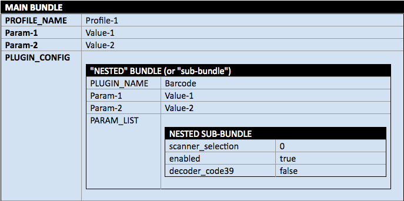
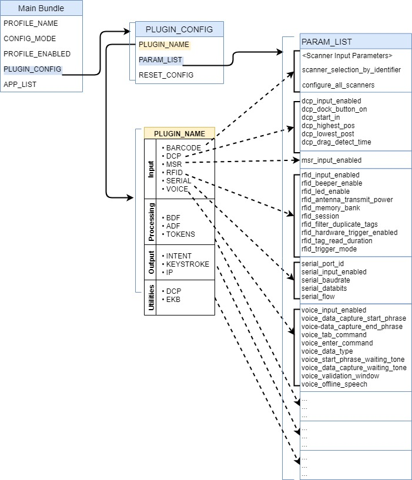

SET_CONFIG
DataWedge プロファイルとその設定の作成、更新、または置換に使用し、単一のインテント アクションで複数のオプションを構成できます。SET_CONFIG は、ネストされたバンドルを実装します。ここで、PARAM_LIST (パラメータ リスト) バンドルは、対応する PLUGIN_CONFIG (入力、データ処理、ユーティリティ、または出力に基づくオプション ) バンドル内にネストし、次にそれをメインの SET_CONFIG バンドル内にネストできます。SET_CONFIG バンドル内には、複数の PLUGIN_CONFIG バンドルをネストできます。
 図 1.ネストされたバンドルの視覚的表現。
設定パラメータを構成せずにプロファイルを作成するには、CREATE_PROFILE を使用します。
関数プロトタイプ
Intent i = new Intent();
i.setAction("com.symbol.datawedge.api.ACTION");
i.putExtra("com.symbol.datawedge.api.SET_CONFIG", <mainbundle>);
パラメータ
ACTION [String]: "com.symbol.datawedge.api.ACTION"
EXTRA_DATA [String]: "com.symbol.datawedge.api.SET_CONFIG"
BUNDLE: <メイン バンドル> (以下のパラメータを参照)
メイン バンドル
メインの SET_CONFIG バンドルには、次のプロパティが含まれます。
- PROFILE_NAME [String]: アクション実行対象のプロファイルの名前
- CONFIG_MODE [String]: (デフォルト = OVERWRITE) プロファイルに適用 (PROFILE_NAME から)。CREATE_PROFILE の代わりに使用できます。オプション:
- CREATE_IF_NOT_EXIST: プロファイルが存在しない場合は、プロファイルが作成され、SET_CONFIG インテントで指定されたパラメータが設定されます。プロファイルが存在する場合は、SET_CONFIG インテントで指定されたパラメータが更新されますが、他のパラメータは変更されません。RESET_CONFIG フラグを使用すると、インテントで指定された新しい値を適用する前に、プラグインをデフォルト値にリセットできます。
- OVERWRITE: プロファイルが存在する場合は、すべてのオプションがデフォルトにリセットされ、指定した設定が適用されます。
- UPDATE: 指定された設定のみを更新します。指定されたプロファイルが DataWedge に存在している必要があります。RESET_CONFIG フラグを使用すると、インテントで指定された新しい値を適用する前に、プラグインをデフォルト値にリセットできます。
- PROFILE_ENABLED [String]: オプション。プロファイルを有効 (true) または無効 (false) にするかどうかを制御します (デフォルト = true)。指定しない場合は、プロファイルの状態は変更されません。
- PLUGIN_CONFIG [Bundle[ ]]: 各プラグインの設定を含むバンドル配列 (メイン バンドル内にネストされる)
- APP_LIST [Array]: プロファイルに関連付けられるバンドルの配列。各 APP_LIST バンドルには、次のプロパティが含まれています。
- PACKAGE_NAME [String]: プロファイルに関連付けられるアプリのパッケージ名。例: "com.symbol.emdk.barcodesample1" またはワイルドカード文字 (*)。
- ACTIVITY_LIST [List]:
PACKAGE_NAMEからのアクティビティのリスト。ワイルドカード文字 (*) もサポートされます。
PLUGIN_CONFIG バンドル
PLUGIN_CONFIG バンドルは、次のプロパティを使用して構成されます。
- RESET_CONFIG [String]: オプション - CONFIG_MODE の CREATE_IF_NOT_EXIST または UPDATE により既存のプロファイルに適用されます。値:
- True (デフォルト) - 既存の構成をすべてクリアし、指定したパラメータ値を使用して新しい構成を作成します
- False - 既存の構成を、新しい構成の変更とマージします。既存の値を更新し、構成に存在しない値を追加します
- PLUGIN_NAME [String]: 構成するプラグインの名前 (大文字と小文字を区別)。
PARAM_LISTの値については、以下の表を参照してください。DataWedge 6.5 以前では、プラグインを含む各インテントに個別のインテント アクションが必要です。- BARCODE 入力
- MSR (磁気ストライプ リーダー) 入力
- RFID (無線周波数識別) 入力
- SERIAL 入力
- VOICE 入力
- WORKFLOW 入力
- BDF (基本データ形式) 処理
- ADF (高度なデータ形式) 処理
- TOKENS (キーストロークのデータ形式と順序、および UDI/マルチバーコード データを含む IP 出力) 処理
- INTENT 出力
- KEYSTROKE 出力
- IP (インターネット プロトコル) 出力
- DCP (Data Capture Plus) ユーティリティ
- EKB (エンタープライズ キーボード) ユーティリティ
- PARAM_LIST [Bundle]:
PLUGIN_CONFIGバンドル内にネストされたパラメータ リスト バンドル。指定されたプラグインの下で更新されるパラメータのリストを含みます。任意のパラメータ値に空の文字列を設定すると、そのパラメータはデフォルト設定にリセットされます。 - OUTPUT_PLUGIN_NAME [String]:
PLUGIN_NAMEとして指定されると、ADF および BDF にのみ適用されます。ADF または BDF パラメータに関連付けられた出力プラグインを指定します。- KEYSTROKE
- INTENT
- IP
PARAM_LIST BUNDLE
PARAM_LIST バンドルは、以下の各 PLUGIN_NAME パラメータ テーブルからパラメータ名と値を指定して構成されます。PLUGIN_CONFIG バンドルで指定された PLUGIN_NAME と一致するパラメータに適用されます。
BARCODE – 下の「スキャナ入力パラメータ」の表の値を受け入れ、ネストされた
PARAM_LISTバンドルのEXTRA_DATAとしてデコーダおよびその他の入力設定を指定します。「自動」に設定されたscanner_selection、scanner_selection_by_identifier、またはconfigure_all_scannersのいずれかを使用して、構成が適用されるスキャナを指定する必要がありますscanner_selection_by_identifier[string] - 下の 「スキャナ識別子」のリストの値を受け入れます。configure_all_scanners[string]- true/false
「true」に設定すると、パラメータscanner_selection_by_identifierは無視され、構成はグローバル スキャナ構成として保存されます。個々のスキャナに以前の構成がある場合は、新しいグローバル構成に置き換えられます。
「false」に設定すると、構成は選択した個々のスキャナに対してのみ保存されます。スキャナの選択が「自動」に設定された場合は、現在のデフォルトのスキャナ構成が更新されます。MSR - 下の「MSR 入力パラメータ」の表の値を受け入れます。
RFID - 下の「RFID 入力パラメータ」の表の値を受け入れます。
SERIAL - 下の「シリアル入力パラメータ」の表の値を受け入れます。
VOICE - 下の「音声入力パラメータ」の表の値を受け入れます。
ワークフロー - 下の「ワークフロー入力パラメータ」の表の値を受け入れます。
DCP - 下の「DCP (Data Capture Plus) ユーティリティ パラメータ」の表の値を受け入れます。
EKB - 下の「エンタープライズ キーボード構成パラメータ」の表の値を受け入れます。
BDF - 取得したデータに基本データ形式のルールを適用します。下の 「BDF 処理パラメータ」の表の値を受け入れます。
ADF - 取得したデータに高度なデータ形式のルールを適用します。このバンドルには、アクション、デバイス、デコーダ、および Label_ID サブバンドルが含まれます。下の 「ADF 処理パラメータ」の表の値を受け入れます。下記の「ADF の重要事項」セクションを参照してください。
TOKENS - UDI またはマルチバーコードに適用でき、「トークン パラメータ」の表の値を受け入れます。
INTENT - 下の「インテント出力パラメータ」の表の値を受け入れます。
KEYSTROKE - 下の「キーストローク出力パラメータ」の表の値を受け入れ、ネストされた
PARAM_LISTバンドルのEXTRA_DATAとして出力設定を指定します。IP (インターネット プロトコル) - 下の「IP 出力パラメータ」の表の値を受け入れます。
ADF の重要事項:
- ルールがない状態でプロファイルが作成された場合、DataWedge では、「SEND_REMAINING」データを変更しない 1 つのアクションで「Rule0」を作成します。
- 新たに作成された 1 つ以上のルールの値が欠落している場合や、無効である場合は、デフォルト値が使用されます。
- インテントを使用して既存のプロファイルの 1 つ以上のアクションを更新するには、プロファイルのすべてのアクションをインテントに含める必要があります。

図 2.ネストされた SET_CONFIG バンドルの視覚的表現。バンドルは青色で示され、対応するプロパティがリストされています。PLUGIN_NAME に、構成に使用可能なプラグイン (オプション) の名前が表示されます。各プラグインの点線矢印は、その特定のプラグインに構成可能なプロパティである、対応する PARAM_LIST を指しています。「コード例」を参照してください。
スキャナ識別子
スキャナ識別子 (DataWedge 6.5 で導入) により、インデックス番号ではなく、わかりやすい名前でスキャナを識別できます。
SCANNER_IDENTIFIER [String]: デバイスでサポートされている各スキャナのスキャナ情報バンドルに存在します。インデックス パラメータと識別子パラメータは、どちらも DataWedge 6.6 以降でサポートされており、インデックスをコードでも参照できる場合は、スキャナ識別子の値が優先します。
指定可能な値:
- AUTO - スキャナ自動選択
- INTERNAL_IMAGER - 内蔵イメージャ スキャナ
- INTERNAL_LASER - 内蔵レーザー スキャナ
- INTERNAL_CAMERA - 内蔵カメラ スキャナ
- SERIAL_SSI ET50/ET55 用のプラグ接続可能な Z バック スキャナ
- BLUETOOTH_SSI - RS507 Bluetooth スキャナ
- BLUETOOTH_RS6000 - RS6000 Bluetooth スキャナ
- BLUETOOTH_DS2278 - DS2278 Bluetooth スキャナ
- BLUETOOTH_DS3678 - DS3678 Bluetooth スキャナ
- PLUGABLE_SSI - シリアル SSI スキャナ RS429 (WT6000 用)
- PLUGABLE_SSI_RS5000 - シリアル SSI スキャナ RS5000 (WT6000 用)
- USB_SSI_DS3608 - DS3608 プラグ接続可能 USB スキャナ
- BLUETOOTH_ZEBRA - 汎用 Zebra Bluetooth スキャナ
- USB_ZEBRA - 汎用 Zebra USB スキャナ
結果コード
DataWedge は、アプリにインテント エクストラ (SEND_RESULT および COMMAND_IDENTIFIER) が含まれている場合、次のエラー コードを返し、DataWedge の結果インテント メカニズムを使用してアプリで結果を取得できるようにします。以下の例を参照してください。
- PLUGIN_NOT_SUPPORTED - DataWedge Intent API でサポートされていないプラグインを構成しようとしました
- BUNDLE_EMPTY - バンドルにデータが含まれていません
- PROFILE_NAME_EMPTY - プロファイル名をデータなしで構成しようとしました
- PROFILE_NOT_FOUND - 存在しないプロファイルに対して操作を実行しようとしました
- PLUGIN_BUNDLE_INVALID - 渡されたプラグイン パラメータ バンドルが空であるか、情報が不足しています
- PARAMETER_INVALID - 渡されたパラメータが空、null、または無効でした
- APP_ALREADY_ASSOCIATED - すでに別のプロファイルに関連付けられているアプリを関連付けようとしました
- OPERATION_NOT_ALLOWED - 保護されたプロファイルの名前変更または削除、あるいはアプリと Profile0 の関連付けが行われようとしました
- RESULT_ACTION_RESULT_CODE_EMPTY_RULE_NAME - -
ADF_RULEバンドル内のルール名が空または未定義です - UNLICENSED_FEATURE - ライセンスされていない Zebra Professional シリーズ デバイスで、スキャン モードをマルチバーコードまたは NextGen SimulScan に変更するために、構成の設定 API またはスキャナ パラメータの切り替え API を呼び出そうとしました。
詳細については、結果コード ガイドも参照してください。
スキャナ入力パラメータ
デコーダ、デコーダ パラメータ、およびスキャン パラメータの詳細については、「バーコード入力」を参照してください。
サポートされているデコーダおよびデコーダのパラメータについては、「デコーダ」を参照してください。
重要: デコード パラメータのサポートは、選択したスキャン デバイスによって異なります。デバイス固有のサポートに関する注記については、ユニットに付属のインテグレータ ガイドを参照してください。
すべてのパラメータは、大文字と小文字が区別されます。
UPC/EAN パラメータ
詳細については、「UPC/EAN パラメータ」を参照してください。
| パラメータ ID | パラメータ値 |
|---|---|
| databar_to_upc_ean | true false |
| upc_enable_marginless_decode | true false |
| upcean_security_level | 0 - レベル 0 1 - レベル 1 2 - レベル 2 3 - レベル 3 |
| upcean_supplemental2 | true false |
| upcean_supplemental5 | true false |
| upcean_supplemental_mode | 0 - サプリメンタルなし 1 - サプリメンタル常時 2 - サプリメンタル自動 3 - サプリメンタル スマート 4 - サプリメンタル 378-379 5 - サプリメンタル 978-979 6 - サプリメンタル 414-419-434-439 7 - サプリメンタル 977 |
| upcean_retry_count | 2 ～ 20 の整数 |
| upcean_linear_decode | true false |
| upcean_bookland | true false |
| upcean_coupon | true false |
| upcean_coupon_report | 0 - 旧 Coupon レポート モード 1 - 新 Coupon レポート モード 2 - 両 Coupon レポート モード |
| upcean_ean_zero_extend | true false |
| upcean_bookland_format | 0 - ISBN-10 形式 1 - ISBN-13 形式 |
NextGen SimulScan パラメータ
詳細については、「バーコード入力」を参照してください。
| パラメータ ID | パラメータ値 |
|---|---|
| scanning_mode | 3 - マルチバーコード 5 - ドキュメント キャプチャ |
| doc_capture_template | [ドキュメント キャプチャ テンプレートの名前] |
| common_barcode_dynamic_quantity | 1 ～ 100 の整数 (デフォルトは 5) |
バーコードのハイライト パラメータ
詳細については、「バーコードのハイライト」を参照してください。
| パラメータ ID | パラメータ値 |
|---|---|
| barcode_highlighting_enabled | true false |
| rule_name | [ルールの名前] |
基準のパラメータ ID と値:
| 基準 バンドル キー |
基準バンドル値 | バンドル ID | バンドル値 | パラメータ ID | パラメータ値 |
|---|---|---|---|---|---|
| 基準 | バンドル | 識別子 | バンドルの ArrayList | criteria_key | min_length max_length contains ignore_case |
| criteria_value | min_length: imin_length: 整数 1 ～ 10000 (デフォルト = 0) max_length: max_length： 整数 1 ～ 10000 (デフォルト = 0) contains: string ignore_case: true/false (default = false) |
||||
| シンボル体系 | デコーダ内のデコーダ名を参照してください。デコーダ名を文字列配列として渡します。 | N/A | N/A |
アクションのパラメータ ID と値:
| アクション バンドル キー | アクション バンドル値 | パラメータ ID | パラメータ値 |
|---|---|---|---|
| アクション | バンドルの ArrayList | action_key | 塗りつぶし色 |
| action_value | [塗りつぶし色の 16 進値。例: #FFFF0008] |
UDI パラメータ
詳細については、「バーコード入力」を参照してください。
| パラメータ ID | パラメータ値 |
|---|---|
| enable_udi_gs1 | true false |
| enable_udi_hibcc | true false |
| enable_udi_iccbba | true false |
OCR パラメータ
詳細については、「バーコード入力」を参照してください。
| パラメータ ID | パラメータ値 |
|---|---|
| ocr_orientation | DEGREE_0 (0) (デフォルト) DEGREE_270 (1) DEGREE_180 (2) DEGREE_90 (3) OMNIDIRECTIONAL (4) |
| ocr_lines | OCR 読み取り中にスキャンする行数を設定します。 LINE_1 (1 行) (デフォルト) LINE_2 (2 行) LINE_3 (3 行) |
| ocr_min_chars | OCR 読み取り中にデコードする OCR 文字の行あたりの最小数 (スペースを含まない) を設定します。整数値: 低 - 3 文字 (デフォルト) 高 - 100 文字 |
| ocr_max_chars | OCR 読み取り中にデコードする OCR 文字の行あたりの最大数 (スペースを含まない) を設定します。整数値: 低 - 3 文字 (デフォルト) 高 - 100 文字 |
| ocr_subset | プリセット フォント バリエーションの代わりに固有の文字グループを定義します。 最小長 - 1 最大長 - 100 |
| ocr_quiet_zone | OCR 読み取り中にスキャンを停止するには、フィールド幅を空白に設定します。デフォルトは 50 で、6 文字幅のクワイエット ゾーンを表します。整数値: 低 - 20 高 - 99 (デフォルト - 50) |
| ocr_template | スキャンした OCR 文字を目的の入力形式に正確に合わせるためのテンプレートを作成します。これは、スキャン エラーをなくすのに役立ちます。テンプレートは、数字と文字の構成で表されます。デフォルトは 99999999 で、英数字の任意の OCR 文字列を使用できます。「9」の文字が 8 個未満の場合、「9」は数値のみを表します。 最小長 - 3 最大長 - 100 (デフォルト - 99999999) 詳細については、「OCR パラメータ」を参照してください。 |
| ocr_check_digit_modulus | OCR チェック ディジット計算用のチェック ディジット係数値を設定します。整数値: 低 - 1 文字 (デフォルト) 高 - 99 文字 |
| ocr_check_digit_multiplier | 文字位置用の OCR チェック ディジット乗数を設定します。 最小長 - 1 最大長 - 100 (デフォルト - 121212121212) |
| ocr_check_digit_validation | なし - 0 (デフォルト) 積の追加 (左-右) - 3 積の追加 (右-左) - 1 桁の追加 (左-右) - 4 桁の追加 (右-左) - 2 積の追加 (右-左) Simple Remainder - 5 桁の追加 (右-左) Simple Remainder - 6 医療産業 - HIBCC43 - 9 |
| inverse_ocr | 黒色または暗色の背景に白色または明色の文字で出力されます。このオプションは、標準、反転、または両方の OCR スキャンを選択するために使用します。 REGULAR_ONLY (0) (デフォルト) INVERSE_ONLY (1) AUTO_DISCRIMINATE (2) |
その他のスキャナ入力パラメータ
| パラメータ ID | パラメータ値 |
|---|---|
| presentation_mode_sensitivity | 80 - 低程度 120 - 中程度 160 - 高程度 (デフォルト) 詳細 |
| barcode_trigger_mode | 0 - 無効 1 - 有効 詳細 |
| auto_switch_to_default_on_event | 0 - 無効 1 - オン接続 2 - オン切断 3 - オン接続/切断 詳細 |
| digimarc_decoding | true false |
| scanning_mode | 1 - シングル 2 - UDI -Android P (バージョン 9.x) までの一部の Zebra デバイスでのみサポートされています |
| multi_barcode_count | 2 ～ 100 の整数 |
| instant_reporting_enable | true false |
| report_decoded_barcodes | true false |
| scanner_selection_by_identifier | 「スキャナ識別子」の表を参照してください。 (*) 詳細については、この表の下の注意事項を参照してください。 |
| scanner_trigger_resource | LEFT RIGHT CENTER GUN PROXIMITY KEY_MAPPER_SCAN KEY_MAPPER_L1 KEY_MAPPER_R1 WIRED_LEFT WIRED_RIGHT |
| trigger-wakeup | true false |
| scanner_input_enabled | true false |
| scanner_selection | 自動 0-n (ENUMERATE_SCANNERS API からの有効なスキャナ インデックス) |
| aim_mode | on - オン off - オフ |
| beam_timer | 0 ～ 60000 の整数 |
| Adaptive_Scanning | 0 - 有効 1 - 無効 |
| Beam_Width | 0 - 狭 1 - 標準 2 - 広 |
| power_mode | 0 - 低出力モード 1 - 最適出力モード 2 - 高出力モード 3 - 常時ON |
| mpd_mode | 0 - 移動電話表示モードを無効化 3 - 移動電話表示モードを有効化 |
| reader_mode | 0 - トリガ モード 7 - プレゼンテーション モード |
| linear_security_level | 1 - セキュリティ Short/Codabar 2 - セキュリティ全 2 回 3 - セキュリティ Long + Short 4 - セキュリティ全 3 回 |
| picklist | 0 - 無効 1 - 有効/ハードウェア選択リスト 2 - ソフトウェア選択リスト |
| aim_type | 0 - トリガ 1 - 時間指定ホールド 2 - 時間指定リリース 3 - 押してリリース 4 - プレゼンテーション 5 - 連続読み取り 6 - 押して持続 7 - 押して継続 8 - 時間指定継続 詳細情報 |
| scene_detect_qualifier | 0 - なし 1 - 近接センサ入力 |
| aim_timer | 0 ～ 60000 の整数 |
| same_barcode_timeout | 0 ～ 5000 の整数 |
| trigger_wakeup_scan | true false |
| different_barcode_timeout | 0 ～ 5000 の整数 |
| illumination_mode | off - オフ torch - オン |
| illumination_brightness | 0 ～ 10 の整数 |
| cd_mode | 0 - 無効 3 - 有効 |
| low_power_timeout | 0 ～ 1000 の整数 |
| delay_to_low_power_mode | 16 - 1 秒 29 - 30 秒 32 - 1 分 37 - 5 分 |
| inverse_1d_mode | 0 - 無効 1 - 有効 2 - 自動 |
| viewfinder_size | 0 ～ 100 の整数 |
| viewfinder_posx | 0 ～ 100 の整数 |
| viewfinder_posy | 0 ～ 100 の整数 |
| 1d_marginless_decode_effort_level | 0 - レベル 0 1 - レベル 1 2 - レベル 2 3 - レベル 3 |
| poor_quality_bcdecode_effort_level | 0 - レベル 0 1 - レベル 1 2 - レベル 2 3 - レベル 3 |
| charset_name | 自動 UTF-8 ISO-8859-1 Shift_JIS GB18030 |
| auto_charset_preferred_order | セミコロンで区切られた 1 つの文字列内で優先順位に従って優先オプションをリストします。 例 1: 「UTF-8;GB2312」 例 2: 「GB2312;UTF-8」 |
| auto_charset_failure_option | なし UTF-8 ISO-8859-1 Shift_JIS GB18030 |
| viewfinder_mode | 1 - ビューファインダ有効 2 - 固定レチクル |
| code_id_type | 0 - コード ID タイプなし 1 - コード ID タイプ - エイム 2 - コード ID タイプ - シンボル |
| volume_slider_type | 0 - ベル音 1 - 音楽 & メディア 2 - アラーム 3 - 通知 |
| decode_audio_feedback_uri | URI – RingToneManager から使用可能な URI を照会できます |
| decode_haptic_feedback | 真 偽 注: Android 13 デバイスの場合、「Decode Haptic Feedback (タッチ フィードバックのデコード)」を機能させるには、デバイス「Settings (設定)」の「Vibration & Haptics (バイブレーションと触覚)」で「Touch Feedback (触覚フィードバック)」を有効にする必要があります。 |
| bt_disconnect_on_exit | true false |
| connection_idle_time | 0 ～ 1800 の整数 |
| establish_connection_time | 30 ～ 60 の整数 |
| remote_scanner_audio_feedback_mode | 0 ～ 3 の整数 |
| remote_scanner_led_feedback_mode | 0 ～ 3 の整数 |
| display_bt_address_barcode | true false |
| good_decode_led_timer | 0 ～ 1000 の整数 |
| decoding_led_feedback | true false |
| decoder_usplanet_report_check_digit | true false |
| decode_screen_notification | true false |
| decode_screen_time | デコードが成功したときに画面通知を表示する時間 (ミリ秒)。 1000 (デフォルト) 500 ～ 1500 |
| decode_screen_translucency | デコード通知の緑色画面の透過値を設定します。値が大きいほど、透過度は高くなります。値の範囲は 20 ～ 50 で、増分は 5 です。 20、25、30、35 (デフォルト)、40、45、50 |
| keep_pairing_info_after_reboot | デバイスのリブート後に接続された Bluetooth スキャナへの自動再接続を有効/無効にします。接続されている Bluetooth スキャナにのみ適用されます。 0 - 無効 1 - 有効 |
| dpm_illumination_control | DPM バーコードをデコードするためのイルミネーションを制御します。デフォルト値は 10 です。値: 0 - 直接 11 - 間接 10 - サイクル 詳細 |
| dpm_mode | バーコード サイズに基づいて DPM バーコードのデコード性能を最適化します。デフォルト値は 2 です。値: 0 - 無効 1 - モード 1 2 - モード 2 詳細 |
| qr_launch_enable | true false |
| qr_launch_enable_qr_decoder | true false |
| qr_launch_show_confirmation_dialog | true false |
| nodecode_time | 0～180000 の整数 (1000 単位で増分) |
(*) scanner_selection_by_identifier に関連する注意事項:
- 複数のスキャナ バンドルでスキャナ識別子として「自動」を送信すると、詳細なエラー コード「AUTO_NOT_SUPPORTED_IN_MULTI_SCANNER_MODE」とともに、エラー コード「PARAMETER_INVALID」が返されます。
- サポートされていないトリガを送信しても、エラー コードは返されません。
- 同じトリガが別のスキャナ カテゴリの別のスキャナに割り当てられている場合、最後に処理されるスキャナが優先されます。プラグインの処理順序は保証されません。
- 内蔵スキャナを 1 台のみ追加できます。もう 1 台の内蔵スキャナを追加しようとした場合は、最後に処理されるスキャナが優先されます。プラグインの処理順序は保証されません。
- 該当するデバイスでサポートされていないトリガを設定することはできますが、UI には、サポートされているトリガのみが表示されます。
- 複数のスキャナを使用するときは、SWITCH_SCANNER_PARAMS、SOFT_SCAN_TRIGGER などの DataWedge API でパラメータ
scanner_selection_by_identifierを使用する必要があります。そうしないと、COMMAND_NOT_SUPPORTED のエラーが発生します。
MSR 入力パラメータ
すべてのパラメータは、大文字と小文字が区別されます。
| パラメータ ID | パラメータ値 |
|---|---|
| msr_input_enabled | true false |
RFID 入力パラメータ
すべてのパラメータは、大文字と小文字が区別されます。
| パラメータ ID | パラメータ値 |
|---|---|
| rfid_input_enabled | true false |
| rfid_beeper_enable | true false |
| rfid_led_enable | true false |
| rfid_antenna_transmit_power | 5 ～ 30 の整数 |
| rfid_memory_bank | 0 - なし (デフォルト) 1 - ユーザー 2 - 予約済み 3 - TID (タグ識別子) 4 - EPC (電子製品コード) |
| rfid_session | 0 - セッション 0 1 - セッション 1 (デフォルト) 2 - セッション 2 3 - セッション 3 |
| rfid_filter_duplicate_tags | true false |
| rfid_hardware_trigger_enabled | true false |
| rfid_trigger_mode | 0 - 即時 (デフォルト) 1 - 連続 |
| rfid_tag_read_duration | 100 ～ 60000 の整数 |
| rfid_link_profile | 0～ 11 の整数 範囲整数は、リーダー モデルに基づいて変更される場合があります。 |
| rfid_dynamic_power_mode | true false |
| プリフィルタ PARAM_LIST | |
| rfid_pre_filter_enable | true false |
| rfid_pre_filter_tag_pattern | [空白] [任意の文字列] |
| rfid_pre_filter_target | 0 ～ 4 の整数 |
| rfid_pre_filter_memory_bank | 0 ～ 2 の整数 |
| rfid_pre_filter_offset | 0 ～ 1024 の整数 |
| rfid_pre_filter_action | 0 ～ 7 の整数 |
| ポストフィルタ PARAM_LIST | |
| rfid_post_filter_enable | true false |
| rfid_post_filter_no_of_tags_to_read | 0 ～ 1000 の整数 |
| rfid_post_filter_rssi | -100 ～ 0 の整数 |
シリアル入力パラメータ
重要: シリアル パラメータのサポートは、デバイスによって異なります。デバイス固有のサポートに関する注記については、ユニットに付属のインテグレータ ガイドを参照してください。
すべてのパラメータは、大文字と小文字が区別されます。
| パラメータ ID | パラメータ値 |
|---|---|
| serial_port_id | 0-n (有効なインデックスである必要があります) |
| serial_input_enabled | true false |
| serial_baudrate | 300、1200、2400、4800、9600、19200、38400、57600、115200、230400、460800、または 921600 |
| serial_databits | 7 8 |
| serial_parity | NONE ODD EVEN MARK SPACE |
| serial_stopbits | 1 2 |
| serial_flow | FLOW_NONE、FLOW_RTS_CTS、または FLOW_XON_XOFF |
音声入力パラメータ
すべてのパラメータは、大文字と小文字が区別されます。
| パラメータ ID | パラメータ値 |
|---|---|
| voice_input_enabled | true false |
| voice_data_capture_start_option | 1 - PTT ボタン |
| voice_end_detection_timeout | 0 ～ 30 (秒) |
| voice_data_type | 0 - すべて 1 - 英文字 2 - 数字 |
| voice_data_capture_waiting_tone | true false |
| voice_validation_window | true false |
| voice_offline_speech | true false |
| voice_command_tab_enabled | true false (デフォルト) |
| voice_command_tab_phrase | send tab (デフォルト) |
| voice_command_enter_enabled | true false (デフォルト) |
| voice_command_enter_phrase | send enter (デフォルト) |
| voice_command_move_next_enabled | true false (デフォルト) |
| voice_command_move_next_phrase | move next (デフォルト) |
| voice_command_move_previous_enabled | true false (デフォルト) |
| voice_command_move_previous_phrase | move previous (デフォルト) |
| voice_command_escape_enabled | true false (デフォルト) |
| voice_command_escape_phrase | send escape (デフォルト) |
| voice_command_clear_enabled | true false (デフォルト) |
| voice_command_clear_phrase | clear (デフォルト) |
ワークフロー入力パラメータ
すべてのパラメータは、大文字と小文字が区別されます。
詳細については、「ワークフロー入力」を参照してください。
| パラメータ ID | パラメータ値 |
|---|---|
| workflow_input_enabled | true false |
| selected_workflow_name | license_plate id_scanning vin_number tin_number container_scanning meter_reading free_form_capture |
| workflow_input_source | 1 - イメージャ 2 - カメラ |
ナンバープレート
| パラメータ名 | パラメータ ID | モジュール ID | パラメータ値 (API 値 - UI 値) |
説明 |
|---|---|---|---|---|
| 入力ソース | workflow_input_source | N/A | 2- カメラ | 入力ソースを指定します。OCR ではカメラのみがサポートされます |
| セッション タイムアウト | session_timeout | LicenseDecoderModule | 整数範囲: 0 ～ 60000 (500 刻み) デフォルト: 10000 |
タイムアウト期間を指定します |
| イルミネーション | イルミネーション | CameraModule | on - オン off - オフ (デフォルト) |
スキャン中に照明のオン/オフを切り替えます |
| 出力イメージ | output_image | LicenseDecoderModule | full - フル (デフォルト) none - なし |
データのデコード元となるフレーム (画像) を出力します |
| 地域の選択 | scanMode | LicenseDecoderModule | auto - EU (欧州連合) (デフォルト) unitedstates - アメリカ合衆国 |
ナンバープレートの領域に基づいてスキャン モードを選択します |
| 音声フィードバックのデコード | decode_audio_feedback_uri | FeedbackModule | [DataWedge UI で音声フィードバックのデコードから取得されたトーンの名前] | デコードに成功したときに再生する音声トーンを指定します |
| タッチ フィードバックのデコード | decode_haptic_feedback | FeedbackModule | 0 – False (デフォルト) 1 – True |
デコードに成功したときのデバイスのバイブレーションを有効/無効にします。 注: Android 13 デバイスの場合、「Decode Haptic Feedback (タッチ フィードバックのデコード)」を機能させるには、デバイス「Settings (設定)」の「Vibration & Haptics (バイブレーションと触覚)」で「Touch Feedback (触覚フィードバック)」を有効にする必要があります。 |
| デコードの LED 通知 | decoding_led_feedback | FeedbackModule | 0 – False (デフォルト) 1 – True |
有効にすると、緑色の LED が点滅して、デコードが成功したことを示します |
| ビープ音量チャンネル | volume_slider_type | FeedbackModule | 0 –ベル音 (音声フィードバックにベル音音量設定を使用) 1 –音楽とメディア (音声フィードバックに音楽とメディアの音量設定を使用) 2 –アラーム (音声フィードバックにアラーム音量設定を使用) 3 –通知 (音声フィードバックに通知音量設定を使用 - デフォルト) |
[デコード完了の音声フィードバック] の再生時に使用する音量設定を選択します。 |
身分証明書
| パラメータ名 | パラメータ ID | モジュール ID | パラメータ値 (API 値 - UI 値) |
説明 |
|---|---|---|---|---|
| 入力ソース | workflow_input_source | N/A | 2- カメラ | 入力ソースを指定します。OCR ではカメラのみがサポートされます |
| セッション タイムアウト | session_timeout | IDDecoderModule | 整数範囲: 0 ～ 60000 (500 刻み) デフォルト: 10000 |
タイムアウト期間を指定します |
| イルミネーション | イルミネーション | CameraModule | on - オン off - オフ (デフォルト) |
スキャン中に照明のオン/オフを切り替えます |
| 出力イメージ | output_image | IDDecoderModule | full - フル (デフォルト) none - なし |
データのデコード元となるフレーム (画像) を出力します |
| 音声フィードバックのデコード | decode_audio_feedback_uri | FeedbackModule | [DataWedge UI で音声フィードバックのデコードから取得されたトーンの名前] | デコードに成功したときに再生する音声トーンを指定します |
| タッチ フィードバックのデコード | decode_haptic_feedback | FeedbackModule | 0 – False (デフォルト) 1 – True |
デコードに成功したときのデバイスのバイブレーションを有効/無効にします. 注: Android 13 デバイスの場合、「Decode Haptic Feedback (タッチ フィードバックのデコード)」を機能させるには、デバイス「Settings (設定)」の「Vibration & Haptics (バイブレーションと触覚)」で「Touch Feedback (触覚フィードバック)」を有効にする必要があります。 |
| デコードの LED 通知 | decoding_led_feedback | FeedbackModule | 0 – False (デフォルト) 1 – True |
有効にすると、緑色の LED が点滅して、デコードが成功したことを示します |
| ビープ音量チャンネル | volume_slider_type | FeedbackModule | 0 –ベル音 (音声フィードバックにベル音音量設定を使用) 1 –音楽とメディア (音声フィードバックに音楽とメディアの音量設定を使用) 2 –アラーム (音声フィードバックにアラーム音量設定を使用) 3 –通知 (音声フィードバックに通知音量設定を使用 - デフォルト) |
[デコード完了の音声フィードバック] の再生時に使用する音量設定を選択します。 |
車両識別番号 (VIN)
| パラメータ名 | パラメータ ID | モジュール ID | パラメータ値 (API 値 - UI 値) |
説明 |
|---|---|---|---|---|
| 入力ソース | workflow_input_source | N/A | 2- カメラ | 入力ソースを指定します。OCR ではカメラのみがサポートされます |
| セッション タイムアウト | session_timeout | VinDecoderModule | 整数範囲: 0 ～ 60000 (500 刻み) デフォルト: 10000 |
タイムアウト期間を指定します |
| イルミネーション | イルミネーション | CameraModule | on - オン off - オフ (デフォルト) |
スキャン中に照明のオン/オフを切り替えます |
| 出力イメージ | output_image | VinDecoderModule | full - フル (デフォルト) none - なし |
データのデコード元となるフレーム (画像) を出力します |
| 音声フィードバックのデコード | decode_audio_feedback_uri | FeedbackModule | [DataWedge UI で音声フィードバックのデコードから取得されたトーンの名前] | デコードに成功したときに再生する音声トーンを指定します |
| タッチ フィードバックのデコード | decode_haptic_feedback | FeedbackModule | 0 – False (デフォルト) 1 – True |
デコードに成功したときのデバイスのバイブレーションを有効/無効にします。 注: Android 13 デバイスの場合、「Decode Haptic Feedback (タッチ フィードバックのデコード)」を機能させるには、デバイス「Settings (設定)」の「Vibration & Haptics (バイブレーションと触覚)」で「Touch Feedback (触覚フィードバック)」を有効にする必要があります。 |
| デコードの LED 通知 | decoding_led_feedback | FeedbackModule | 0 – False (デフォルト) 1 – True |
有効にすると、緑色の LED が点滅して、デコードが成功したことを示します |
| ビープ音量チャンネル | volume_slider_type | FeedbackModule | 0 –ベル音 (音声フィードバックにベル音音量設定を使用) 1 –音楽とメディア (音声フィードバックに音楽とメディアの音量設定を使用) 2 –アラーム (音声フィードバックにアラーム音量設定を使用) 3 –通知 (音声フィードバックに通知音量設定を使用 - デフォルト) |
[デコード完了の音声フィードバック] の再生時に使用する音量設定を選択します。 |
タイヤ識別番号 (TIN)
| パラメータ名 | パラメータ ID | モジュール ID | パラメータ値 (API 値 - UI 値) |
説明 |
|---|---|---|---|---|
| 入力ソース | workflow_input_source | N/A | 2- カメラ | 入力ソースを指定します。OCR ではカメラのみがサポートされます |
| セッション タイムアウト | session_timeout | TinDecoderModule | 整数範囲: 0 ～ 60000 (500 刻み) デフォルト: 10000 |
タイムアウト期間を指定します |
| イルミネーション | イルミネーション | CameraModule | on - オン off - オフ (デフォルト) |
スキャン中に照明のオン/オフを切り替えます |
| 出力イメージ | output_image | TinDecoderModule | full (デフォルト) none |
データのデコード元となるフレーム (画像) を出力します |
| TIN タイプ | scanMode | TinDecoderModule | DOT_STRICT – US DOT 1 (長さ: 15 文字または 16 文字、パターン: DOT (3 文字) 、工場コードには 2 ～ 3 文字、製造元コードには 6 文字、そして製造日には 4 桁が使われます。 DOT - US DOT 2 (長さ: 11 ～ 16 文字) ユニバーサル – ユニバーサル TIN (長さ: 最小 4 文字) COMMERCIAL_TIRE - Commercial TIN (長さ: 7 ～ 14 文字) TIRE_SIZE - タイヤ サイズ (長さ: 10 ～ 20 文字) |
TIN 読み取りにスキャン モードを選択します |
| 音声フィードバックのデコード | decode_audio_feedback_uri | FeedbackModule | [DataWedge UI で音声フィードバックのデコードから取得されたトーンの名前] | デコードに成功したときに再生する音声トーンを指定します |
| タッチ フィードバックのデコード | decode_haptic_feedback | FeedbackModule | 0 – False (デフォルト) 1 – True |
デコードに成功したときのデバイスのバイブレーションを有効/無効にします。 注: Android 13 デバイスの場合、「Decode Haptic Feedback (タッチ フィードバックのデコード)」を機能させるには、デバイス「Settings (設定)」の「Vibration & Haptics (バイブレーションと触覚)」で「Touch Feedback (触覚フィードバック)」を有効にする必要があります。 |
| デコードの LED 通知 | decoding_led_feedback | FeedbackModule | 0 – False (デフォルト) 1 – True |
有効にすると、緑色の LED が点滅して、デコードが成功したことを示します |
| ビープ音量チャンネル | volume_slider_type | FeedbackModule | 0 –ベル音 (音声フィードバックにベル音音量設定を使用) 1 –音楽とメディア (音声フィードバックに音楽とメディアの音量設定を使用) 2 –アラーム (音声フィードバックにアラーム音量設定を使用) 3 –通知 (音声フィードバックに通知音量設定を使用 - デフォルト) |
[デコード完了の音声フィードバック] の再生時に使用する音量設定を選択します。 |
輸送コンテナ ID
| パラメータ名 | パラメータ ID | モジュール ID | パラメータ値 (API 値 - UI 値) |
説明 |
|---|---|---|---|---|
| 入力ソース | workflow_input_source | N/A | 2- カメラ | 入力ソースを指定します。OCR ではカメラのみがサポートされます |
| セッション タイムアウト | session_timeout | ContainerDecoderModule | 整数範囲: 0 ～ 60000 (500 刻み) デフォルト: 10000 |
タイムアウト期間を指定します |
| イルミネーション | イルミネーション | CameraModule | on - オン off - オフ (デフォルト) |
スキャン中に照明のオン/オフを切り替えます |
| ズーム | zoom | CameraModule | 整数範囲: 1 ～ 8 (1 刻み) デフォルト: 1 |
カメラのズーム値を指定します |
| 出力イメージ | output_image | ContainerDecoderModule | full - フル (デフォルト) none - なし |
データのデコード元となるフレーム (画像) を出力します |
| 向き | orientation | ContainerDecoderModule | horizontal - 水平 (デフォルト) vertical - 垂直 |
方向タイプを指定します |
| 音声フィードバックのデコード | decode_audio_feedback_uri | FeedbackModule | [DataWedge UI で音声フィードバックのデコードから取得されたトーンの名前] | デコードに成功したときに再生する音声トーンを指定します |
| タッチ フィードバックのデコード | decode_haptic_feedback | FeedbackModule | 0 – False (デフォルト) 1 – True |
デコードに成功したときのデバイスのバイブレーションを有効/無効にします. 注: Android 13 デバイスの場合、「Decode Haptic Feedback (タッチ フィードバックのデコード)」を機能させるには、デバイス「Settings (設定)」の「Vibration & Haptics (バイブレーションと触覚)」で「Touch Feedback (触覚フィードバック)」を有効にする必要があります。 |
| デコードの LED 通知 | decoding_led_feedback | FeedbackModule | 0 – False (デフォルト) 1 – True |
有効にすると、緑色の LED が点滅して、デコードが成功したことを示します |
| ビープ音量チャンネル | volume_slider_type | FeedbackModule | 0 –ベル音 (音声フィードバックにベル音音量設定を使用) 1 –音楽とメディア (音声フィードバックに音楽とメディアの音量設定を使用) 2 –アラーム (音声フィードバックにアラーム音量設定を使用) 3 –通知 (音声フィードバックに通知音量設定を使用 - デフォルト) |
[デコード完了の音声フィードバック] の再生時に使用する音量設定を選択します。 |
メーター
| パラメータ名 | パラメータ ID | モジュール ID | パラメータ値 (API 値 - UI 値) |
説明 |
|---|---|---|---|---|
| 入力ソース | workflow_input_source | N/A | 2- カメラ | 入力ソースを指定します。OCR ではカメラのみがサポートされます |
| セッション タイムアウト | session_timeout | MeterReaderModule | 整数範囲: 0 ～ 60000 (500 刻み) デフォルト: 10000 |
タイムアウト期間を指定します |
| イルミネーション | イルミネーション | CameraModule | on - オン off - オフ (デフォルト) |
スキャン中に照明のオン/オフを切り替えます |
| 出力イメージ | output_image | MeterReaderModule | full - フル (デフォルト) none - なし |
データのデコード元となるフレーム (画像) を出力します |
| メーター タイプ | scanMode | MeterReaderModule | AUTO_ANALOG_DIGITAL_METER – アナログ、デジタル、またはデジタル ドット マトリックス メーター (デフォルト) DIAL_METER - ダイヤル メーター |
メーター タイプをアナログ、デジタル、デジタル ドット マトリックス、またはダイヤルから指定します。 |
| 音声フィードバックのデコード | decode_audio_feedback_uri | FeedbackModule | [DataWedge UI で音声フィードバックのデコードから取得されたトーンの名前] | デコードに成功したときに再生する音声トーンを指定します |
| タッチ フィードバックのデコード | decode_haptic_feedback | FeedbackModule | 0 – False (デフォルト) 1 – True |
デコードに成功したときのデバイスのバイブレーションを有効/無効にします. 注: Android 13 デバイスの場合、「Decode Haptic Feedback (タッチ フィードバックのデコード)」を機能させるには、デバイス「Settings (設定)」の「Vibration & Haptics (バイブレーションと触覚)」で「Touch Feedback (触覚フィードバック)」を有効にする必要があります。 |
| デコードの LED 通知 | decoding_led_feedback | FeedbackModule | 0 – False (デフォルト) 1 – True |
有効にすると、緑色の LED が点滅して、デコードが成功したことを示します |
| ビープ音量チャンネル | volume_slider_type | FeedbackModule | 0 –ベル音 (音声フィードバックにベル音音量設定を使用) 1 –音楽とメディア (音声フィードバックに音楽とメディアの音量設定を使用) 2 –アラーム (音声フィードバックにアラーム音量設定を使用) 3 –通知 (音声フィードバックに通知音量設定を使用 - デフォルト) |
[デコード完了の音声フィードバック] の再生時に使用する音量設定を選択します。 |
フリーフォーム イメージ キャプチャ
| パラメータ名 | パラメータ ID | モジュール ID | パラメータ値 (API 値 - UI 値) |
説明 |
|---|---|---|---|---|
| 入力ソース | workflow_input_source | N/A | 1 - イメージャ (デフォルト) 2 - カメラ |
入力ソースを指定します。 |
| セッション タイムアウト | session_timeout | BarcodeTrackerModule | 整数範囲: 0 ～ 60000 (500 刻み) デフォルト: 10000 |
タイムアウト期間を指定します |
| イルミネーション | イルミネーション | BarcodeTrackerModule | on - オン (デフォルト) off - オフ |
スキャン中に照明のオン/オフを切り替えます |
| バーコードを読み取り、強調表示 | decode_and_highlight_barcodes | BarcodeTrackerModule | 1 – オフ 2 – 強調表示 (デフォルト) 3 – 読み取り、強調表示 |
バーコードの読み取りと強調表示、バーコードのみの強調表示、またはどちらも選択しない、を指定します。 |
| 音声フィードバックのデコード | decode_audio_feedback_uri | FeedbackModule | [DataWedge UI で音声フィードバックのデコードから取得されたトーンの名前] | デコードに成功したときに再生する音声トーンを指定します |
| タッチ フィードバックのデコード | decode_haptic_feedback | FeedbackModule | 0 – False (デフォルト) 1 – True |
デコードに成功したときのデバイスのバイブレーションを有効 / 無効にします. 注: Android 13 デバイスの場合、「Decode Haptic Feedback (タッチ フィードバックのデコード)」を機能させるには、デバイス「Settings (設定)」の「Vibration & Haptics (バイブレーションと触覚)」で「Touch Feedback (触覚フィードバック)」を有効にする必要があります。 |
| デコードの LED 通知 | decoding_led_feedback | FeedbackModule | 0 – False (デフォルト) 1 – True |
有効にすると、緑色の LED が点滅して、デコードが成功したことを示します |
| ビープ音量チャンネル | volume_slider_type | FeedbackModule | 0 –ベル音 (音声フィードバックにベル音音量設定を使用) 1 –音楽とメディア (音声フィードバックに音楽とメディアの音量設定を使用) 2 –アラーム (音声フィードバックにアラーム音量設定を使用) 3 –通知 (音声フィードバックに通知音量設定を使用 - デフォルト) |
[デコード完了の音声フィードバック] の再生時に使用する音量設定を選択します。 |
ドキュメント キャプチャ
| パラメータ名 | パラメータ ID | モジュール ID | パラメータ値 (API 値 - UI 値) |
説明 |
|---|---|---|---|---|
| 入力ソース | workflow_input_source | N/A | 1 - イメージャ (デフォルト) 2 - カメラ |
入力ソースを指定します。 |
| セッション タイムアウト | session_timeout | BarcodeTrackerModule | 整数範囲: 0 ～ 60000 (500 刻み) デフォルト: 15000 |
タイムアウト期間を指定します |
| イルミネーション | イルミネーション | BarcodeTrackerModule | on - オン (デフォルト) off - オフ |
スキャン中に照明のオン/オフを切り替えます |
| バーコードの有無 | barcode_presence | BarcodeTrackerModule | mandatory – 必須 optional – オプション (デフォルト) |
バーコードを提供する必要があるかどうかを指定します |
| ドキュメントの強調表示モード | document_highlight_mode | BarcodeTrackerModule | border_only - 枠線のみ (デフォルト) fill - 塗りつぶし |
強調表示するドキュメント領域を指定します |
| ドキュメントの強調表示色 | document_highlight_color | BarcodeTrackerModule | デフォルトのカラー コードは次のとおりです。1711322368 - #6600B500 | カラー セレクタ ダイアログで、ドキュメントを強調表示する色を選択します |
| 音声フィードバックのデコード | decode_audio_feedback_uri | FeedbackModule | [DataWedge UI で音声フィードバックのデコードから取得されたトーンの名前] | デコードに成功したときに再生する音声トーンを指定します |
| タッチ フィードバックのデコード | decode_haptic_feedback | FeedbackModule | 0 – False (デフォルト) 1 – True |
デコードに成功したときのデバイスのバイブレーションを有効/無効にします. 注: Android 13 デバイスの場合、「Decode Haptic Feedback (タッチ フィードバックのデコード)」を機能させるには、デバイス「Settings (設定)」の「Vibration & Haptics (バイブレーションと触覚)」で「Touch Feedback (触覚フィードバック)」を有効にする必要があります。 |
| デコードの LED 通知 | decoding_led_feedback | FeedbackModule | 0 – False (デフォルト) 1 – True |
有効にすると、緑色の LED が点滅して、デコードが成功したことを示します |
| ビープ音量チャンネル | volume_slider_type | FeedbackModule | 0 –ベル音 (音声フィードバックにベル音音量設定を使用) 1 –音楽とメディア (音声フィードバックに音楽とメディアの音量設定を使用) 2 –アラーム (音声フィードバックにアラーム音量設定を使用) 3 –通知 (音声フィードバックに通知音量設定を使用 - デフォルト) |
[デコード完了の音声フィードバック] の再生時に使用する音量設定を選択します。 |
DCP ユーティリティのパラメータ
すべてのパラメータは、大文字と小文字が区別されます。
| パラメータ ID | パラメータ値 | 説明 |
|---|---|---|
| dcp_input_enabled | true false |
Data Capture Plus 入力を有効/無効にします |
| dcp_dock_button_on | LEFT - 左のみ RIGHT - 右のみ BOTH - 左右 |
ドック ボタンの位置: 左側、右側、右側または左側 (両側) |
| dcp_start_in | FULLSCREEN BUTTON BUTTON_ONLY |
DCP の起動モードとして全画面表示、ボタン (ドラッグ & ドロップで再配置できるフローティング ボタン)、およびボタンのみ (再配置不可) を設定します。 |
| dcp_highest_pos | 0 ～ 100 | 画面全体の高さに対する割合で表現されたボタン位置の上限を設定します。たとえば、縦 4 インチの画面で 75 (%) に設定すると、DCP ボタンの上端が画面上端から 1 インチ未満になることはありません。 |
| dcp_lowest_pos | 0 ～ 100 | 画面全体の高さに対する割合で表現されたボタン位置の下限を設定します。たとえば、縦 4 インチの画面で 25 (%) に設定すると、DCP ボタンの下端が画面下端から 1 インチ未満になることはありません。 |
| dcp_drag_detect_time | 0 ～ 1000 | 画面をタップした後に DCP が待機する時間 (ミリ秒) であり、この時間の経過後にスキャナ アクションがトリガされます。これにより、DCP ボタンを新しい場所にドラッグするときに、誤ったトリガを防ぐことができます。 |
「DCP 入力」を参照してください。
エンタープライズ キーボード構成パラメータ
すべてのパラメータは、大文字と小文字が区別されます。
| パラメータ ID | パラメータ値 | 説明 |
|---|---|---|
| ekb_enabled | true false |
エンタープライズ キーボードの有効化/無効化 |
| ekb_layout | 次の値を受け入れるバンドル: • layout_group [string] • layout_name [string] |
エンタープライズ キーボード構成の DataWedge UI に表示されるものと一致する "layout_group" および "layout_name" を指定します。両方の名前は、エンタープライズ キーボード デザイナで設定します。"layout_group" は、プロジェクト名に基づいており、"layout_name" は、指定されたレイアウト名に基づいています。"ekb_layout" を null にすると、デフォルトの標準エンタープライズ キーボードに設定されます。 |
BDF 処理パラメータ
すべてのパラメータは、大文字と小文字が区別されます。
| パラメータ ID | パラメータ値 |
|---|---|
| bdf_enabled | true false |
| bdf_prefix | [取得したデータの前に追加する文字列] |
| bdf_suffix | [取得したデータを追加する文字列] |
| bdf_send_data | true false |
| bdf_send_hex | true false |
| bdf_send_tab | true false |
| bdf_send_enter | true false |
ADF 処理パラメータ
すべてのパラメータは、大文字と小文字が区別されます。
| パラメータ ID | パラメータ値 |
|---|---|
| adf_enabled | true false (デフォルト) |
| ADF_RULE | 次の値を受け入れるバンドル: • name [string] – 使用する ADF ルールの名前 • enabled [string] – ルールが有効、true/false (デフォルト = true) • alldevices [string] – サポートされているすべての入力ソースからデータを受け入れ、true/false (デフォルト = true) • string [string] – チェックする文字列 (デフォルト = 空の文字列) • string_pos [string] – 文字列の位置 (デフォルト =0) • string_len [string] - 文字列長 (デフォルト =0) |
| ACTIONS | 複数のインスタンスを持つことができるバンドル。次の値を受け入れます。 • type [string] - 「ADF アクション」の表のアクションの名前 • [action_param_1], [action_param_2]...(「ADF アクション」で定められているとおり。表を参照) |
| DEVICES | 複数のインスタンスを持つことができるバンドル。次の値を受け入れます。 • device_id [string] - 入力ソースの名前: BARCODE、MSR、RFID、SERIAL、または VOICE • enabled [string] - 指定したデバイス ID からデータを受け入れ、true/false (デフォルト = true) • alldecoders [string] - すべてのバーコードシンボル体系を許可、true/false (デフォルト = true) • all_label_ids [string] - すべての UDI ラベル ID を許可、true/false (デフォルト = true) |
| DECODERS | 複数のインスタンスを持つことができるバンドル。次の値を受け入れます。 • device_id [string] - BARCODE、MSR、RFID、SERIAL、または VOICE • decoder [string] - (「Australian Postal」など) • enabled [string] - true/false (デフォルト = true) |
| LABEL_IDS | 複数のインスタンスを持つことができるバンドル。次の値を受け入れます。 • device_id [string] - BARCODE、MSR、RFID、SERIAL、または VOICE • label_id [string] - UDI_GS1、UDI_HIBCC、または UDI_ICCBBA •enabled [string] - true/false (デフォルト = true) |
ADF アクション
| カテゴリ | アクション タイプ パラメータ (パラメータがある場合) |
説明 |
|---|---|---|
カーソルの移動 |
SKIP_AHEAD |
指定した文字数だけカーソルを前方に移動します (デフォルト = 1) |
SKIP_BACK |
指定した文字数だけカーソルを後方に移動します (デフォルト = 1) |
|
SKIP_TO_START |
カーソルをデータの先頭に移動します |
|
MOVE_AHEAD_TO |
DataWedge UI では [次に移動] と呼ばれており、指定された文字列が見つかるまでカーソルを移動します |
|
MOVE_PAST_A |
指定した文字列の前にカーソルを移動します |
|
データの変更 |
CRUNCH_SPACES |
単語間のスペースを 1 に減らし、データの先頭と末尾のすべてのスペースを削除します |
STOP_CRUNCH_SPACE |
最後のスペース クランチ アクションを無効にします |
|
REMOVE_SPACES |
DataWedge UI では [すべてのスペースの削除] と呼ばれており、データ内のすべてのスペースを削除します |
|
STOP_REMOVE_SPACES |
最後の REMOVE_SPACES アクションを無効にします |
|
TRIM_LEFT_ZEROS |
DataWedge UI では [先頭のゼロを削除] と呼ばれており、データの先頭にあるすべてのゼロを削除します |
|
STOP_TRIM_LEFT_ZEROS |
前の TRIM_LEFT_ZEROS アクションを無効にします |
|
PAD_LEFT_ZEROS |
DataWedge UI では [ゼロで埋める] と呼ばれており、指定された数のゼロでデータを左詰めします (デフォルト = 0) |
|
STOP_PAD_LEFT_ZEROS |
前の PAD_LEFT_ZEROS アクションを無効にします |
|
PAD_LEFT_SPACES |
DataWedge UI では [スペースで埋める] と呼ばれており、指定した数のスペースでデータを左詰めします (デフォルト = 0) |
|
STOP_PAD_LEFT_SPACES |
前の PAD_LEFT_SPACES アクションを無効にします |
|
REPLACE_STRING |
指定した文字列 (action_param_1) を、指定した新しい文字列 (action_param_2) に置き換えます。両方を指定する必要があります (デフォルト = 空) |
|
STOP_REPLACE_ALL |
DataWedge UI では [すべての文字列置換の停止] と呼ばれており、すべての REPLACE_STRING アクションを停止します |
|
REMOVE_CHARACTERS |
送信アクションが実行されたときに、指定した位置の指定した文字数を削除します |
|
STOP_REMOVE_CHARS |
後続の送信アクションからの文字の削除を停止します |
|
データの送信 |
SEND_NEXT |
現在のカーソル位置から指定した数の文字を送信します (デフォルト = 0) |
SEND_REMAINING |
現在のカーソル位置から残っているすべてのデータを送信します |
|
SEND_UP_TO |
指定した文字列までのすべてのデータを送信します |
|
DELAY |
DataWedge UI では [休止を送る] と呼ばれており、指定したミリ秒数 (デフォルト = 0、最大 = 120000) の間、一時停止してから、次のアクションを実行します。ENTER、LINE FEED、または TAB の文字を送信した後、50ms の一時停止を設定することをお勧めします。 |
|
SEND_STRING |
指定した文字列を送信します |
|
SEND_CHAR |
指定した ASCII/Unicode 文字を送信します。Unicode 文字の最大値は U-10FFFF (10 進数で 1114111) です |
|
通知 |
BEEP |
通知トーンを設定します。トーン名を取得する手順については、DataWedge UI を参照してください。トーン名は、デバイスおよび Android のバージョンによって異なる場合があります。例: |
注:
- 特に明記されていない限り、デフォルトの action_param 値は 0、空、またはなしです。
- データの損失を最小限に抑えるため、ENTER、LINE FEED、または TAB の文字を送信した後、50ms の DELAY を送信することをお勧めします。
トークン パラメータ
UDI またはマルチバーコードに適用されます。
すべてのパラメータは、大文字と小文字が区別されます。
| パラメータ ID | パラメータ値 |
|---|---|
| send_tokens_option | DISABLED TOKENS BARCODES_TOKENS |
| token_separator | TAB CR LF NONE |
| multibarcode_separator | TAB CR LF NONE |
| token_order | name: manufacturing_date_original enabled: true/false name: expiration_date_original enabled: true/false name: di enabled: true/false (注: 「di」はデバイス識別子を表します)。 name: lot_number enabled: true/false name: serial_number enabled: true/false name: mpho_lot_number enabled: true/false name: donation_id enabled: true/false name: labeler_identification_code enabled: true/false name: product_or_catalog_number enabled: true/false name: unit_of _measure_id enabled: true/false name: quantity enabled: true/false * DataWedge では、ArrayList にリストされている項目の順序に従って優先順位を決定し、エレメント 0 が最高の優先順位となります。 |
「IP 出力」または「キーストローク出力」の「UDI データ出力」を参照してください。
インテント出力パラメータ
すべてのパラメータは、大文字と小文字が区別されます。
| パラメータ ID | パラメータ値 | ||||||||||||
|---|---|---|---|---|---|---|---|---|---|---|---|---|---|
| intent_output_enabled | true false |
||||||||||||
| intent_action | [アクションの正確な名前] | ||||||||||||
| intent_category | [カテゴリの正確な名前] | ||||||||||||
| intent_delivery | 0 - アクティビティ開始 1 - サービス開始 2 - ブロードキャスト |
||||||||||||
| intent_component_info [bundle array] |
[バンドル]
|
||||||||||||
| intent_use_content_provider | true false |
キーストローク出力パラメータ
すべてのパラメータは、大文字と小文字が区別されます。
| パラメータ ID | パラメータ値 |
|---|---|
| keystroke_output_enabled | true false |
| keystroke_action_char | NONE - ASCII_NO_VALUE タブ - ASCII_TAB_VALUE LF - ASCII_LF_VALUE CR - ASCII_CR_VALUE |
| keystroke_delay_extended_ascii (廃止予定) | 0 ～ 1000 の整数 |
| keystroke_delay_control_chars | 0 ～ 1000 の整数 |
| keystroke_character_delay | 0 ～ 1000 の整数 |
| keystroke_delay_multibyte_chars_only | true false |
| keystroke_send_chars_as_events | true false (デフォルト) |
| keystroke_send_control_chars_as_events | true false (デフォルト) |
| keystroke_send_tab_as_string | true false (デフォルト) |
キーストローク遅延に関する注意事項
keystroke_delay_extended_asciiパラメータは廃止予定です。- キーストローク プラグイン バンドルで
keystroke_delay_extended_asciiパラメータを使用する場合、keystroke_delay_multibyte_chars_onlyパラメータは true に設定されます。 keystroke_delay_extended_asciiとkeystroke_character_delayの両方のパラメータが送信された場合:keystroke_character_delayの値は保持されます。keystroke_delay_extended_asciiの値は無視されます。- 使用可能であれば、
keystroke_delay_multibyte_chars_onlyの値は保存されます。そうでない場合は、エラーと見なされます。
IP 出力パラメータ
すべてのパラメータは、大文字と小文字が区別されます。
| パラメータ ID | パラメータ値 |
|---|---|
| ip_output_enabled | true false |
| ip_output_ip_wedge_enabled | true false |
| ip_output_protocol | TCP UDP |
| ip_output_address | [有効な IP アドレス形式] |
| ip_output_port | 1 ～ 65535 |
コード例
ネストされたバンドル
// MAIN BUNDLE PROPERTIES
Bundle bMain = new Bundle();
bMain.putString("PROFILE_NAME","Profile12"); // <- "Profile12" is a bundle
bMain.putString("PROFILE_ENABLED","true"); // <- that will be enabled
bMain.putString("CONFIG_MODE","CREATE_IF_NOT_EXIST"); // <- or created if necessary.
// PLUGIN_CONFIG BUNDLE PROPERTIES
Bundle bConfig = new Bundle();
bConfig.putString("PLUGIN_NAME","BARCODE");
bConfig.putString("RESET_CONFIG","true");
// PARAM_LIST BUNDLE PROPERTIES
Bundle bParams = new Bundle();
bParams.putString("scanner_selection","auto");
bParams.putString("scanner_input_enabled","true");
//
// NOTE: The "scanner_selection" parameter (above) supports "auto" selection
// --OR-- the assignment of a scanner device index, which is obtained by
// using the ENUMERATE_SCANNERS API.
//
// Syntax for scanner index:
//
// Bundle bParams = new Bundle();
// diff--> bParams.putString("current-device-id","0");
// bParams.putString("scanner_input_enabled","true");
//
//
// NEST THE BUNDLE "bParams" WITHIN THE BUNDLE "bConfig"
bConfig.putBundle("PARAM_LIST", bParams);
// THEN NEST THE "bConfig" BUNDLE WITHIN THE MAIN BUNDLE "bMain"
bMain.putBundle("PLUGIN_CONFIG", bConfig);
// CREATE APP_LIST BUNDLES (apps and/or activities to be associated with the Profile)
Bundle bundleApp1 = new Bundle();
bundleApp1.putString("PACKAGE_NAME","com.symbol.emdk.simulscansample1");
bundleApp1.putStringArray("ACTIVITY_LIST", new String[]{
"com.symbol.emdk.simulscansample1.DeviceControl",
"com.symbol.emdk.simulscansample1.MainActivity",
"com.symbol.emdk.simulscansample1.ResultsActivity.*",
"com.symbol.emdk.simulscansample1.ResultsActivity2",
"com.symbol.emdk.simulscansample1.SettingsFragment1"});
Bundle bundleApp2 = new Bundle();
bundleApp2.putString("PACKAGE_NAME","com.example.intents.datawedgeintent");
bundleApp2.putStringArray("ACTIVITY_LIST", new String[]{
"com.example.intents.datawedgeintent.DeviceControl",
"com.example.intents.datawedgeintent.MainActivity",
"com.example.intents.datawedgeintent.ResultsActivity",
"com.example.intents.datawedgeintent.SettingsFragment1"});
Bundle bundleApp3 = new Bundle();
bundleApp3.putString("PACKAGE_NAME","*");
bundleApp3.putStringArray("ACTIVITY_LIST", new String[]{"*"});
Bundle bundleApp4 = new Bundle();
bundleApp4.putString("PACKAGE_NAME","com.symbol.myzebraapp");
bundleApp4.putStringArray("ACTIVITY_LIST", new String[]{"*"});
// NEXT APP_LIST BUNDLE(S) INTO THE MAIN BUNDLE
bMain.putParcelableArray("APP_LIST", new Bundle[]{
bundleApp1
,bundleApp2
,bundleApp3
,bundleApp4
});
Intent i = new Intent();
i.setAction("com.symbol.datawedge.api.ACTION");
i.putExtra("com.symbol.datawedge.api.SET_CONFIG", bMain);
this.sendBroadcast(i);
バーコードのハイライト パラメータを設定します
プロファイル内のバーコードのハイライトを設定します。
public void setHighlightBarcodes() {
Bundle bMain = new Bundle();
bMain.putString("PROFILE_NAME", "Demo");
bMain.putString("PROFILE_ENABLED", "true");
bMain.putString("CONFIG_MODE", "CREATE_IF_NOT_EXIST");
Bundle bConfig = new Bundle();
bConfig.putString("PLUGIN_NAME", "BARCODE");
bConfig.putString("RESET_CONFIG", "true");
Bundle bParams = new Bundle();
bParams.putString("scanner_selection", "auto");
bParams.putString("scanner_input_enabled", "true");
bParams.putString("barcode_highlighting_enabled", "true"); // true , false
/*##### Rules configuration start #####*/
Bundle rule1 = new Bundle();
rule1.putString("rule_name","Rule1");
Bundle rule1Criteria = new Bundle();
Bundle bundleMinLength = new Bundle();
bundleMinLength.putString("criteria_key","min_length");
bundleMinLength.putString("criteria_value","1");
Bundle bundleMaxLength = new Bundle();
bundleMaxLength.putString("criteria_key","max_length");
bundleMaxLength.putString("criteria_value","10");
Bundle bundleContains = new Bundle();
bundleContains.putString("criteria_key","contains");
bundleContains.putString("criteria_value","abc");
Bundle bundleIgnoreCase = new Bundle();
bundleIgnoreCase.putString("criteria_key","ignore_case");
bundleIgnoreCase.putString("criteria_value","true");
ArrayList<Bundle> identifierParamList = new ArrayList<>();
identifierParamList.add(bundleMinLength);
identifierParamList.add(bundleMaxLength);
identifierParamList.add(bundleContains);
identifierParamList.add(bundleIgnoreCase);
rule1Criteria.putParcelableArrayList("identifier",identifierParamList);
rule1Criteria.putStringArray("symbology",new String[]{"decoder_qrcode","decoder_upca"});
rule1.putBundle("criteria",rule1Criteria);
Bundle bundleFillColor = new Bundle();
bundleFillColor.putString("action_key","fillcolor");
bundleFillColor.putString("action_value","#FFFF0008");
ArrayList<Bundle> rule1Actions = new ArrayList<>();
rule1Actions.add(bundleFillColor);
rule1.putParcelableArrayList("actions",rule1Actions);
ArrayList<Bundle> barcodeOverlayRuleList = new ArrayList<>();
barcodeOverlayRuleList.add(rule1);
/**
* report data
*/
/*##### Report data for rule Start #####*/
Bundle rule2 = new Bundle();
rule2.putString("rule_name","Rule2");
Bundle rule2Criteria = new Bundle();
Bundle rule2BundleMinLength = new Bundle();
rule2BundleMinLength.putString("criteria_key","min_length");
rule2BundleMinLength.putString("criteria_value","2");
Bundle rule2BundleMaxLength = new Bundle();
rule2BundleMaxLength.putString("criteria_key","max_length");
rule2BundleMaxLength.putString("criteria_value","4");
Bundle rule2BundleContains = new Bundle();
rule2BundleContains.putString("criteria_key","contains");
rule2BundleContains.putString("criteria_value","test1234");
Bundle rule2BundleIgnoreCase = new Bundle();
rule2BundleIgnoreCase.putString("criteria_key","ignore_case");
rule2BundleIgnoreCase.putString("criteria_value","false");
ArrayList<Bundle> rule2IdentifierParamList = new ArrayList<>();
rule2IdentifierParamList.add(rule2BundleMinLength);
rule2IdentifierParamList.add(rule2BundleMaxLength);
rule2IdentifierParamList.add(rule2BundleContains);
rule2IdentifierParamList.add(rule2BundleIgnoreCase);
rule2Criteria.putParcelableArrayList("identifier",rule2IdentifierParamList);
rule2Criteria.putStringArray("symbology",new String[]{"decoder_grid_matrix"});
rule2.putBundle("criteria",rule2Criteria);
Bundle rule2BundleStrokeColor = new Bundle();
rule2BundleStrokeColor.putString("action_key","report");
ArrayList<Bundle> rule2Actions = new ArrayList<>();
rule2Actions.add(rule2BundleStrokeColor);
rule2.putParcelableArrayList("actions",rule2Actions);
ArrayList<Bundle> reportDataRuleList = new ArrayList<>();
reportDataRuleList.add(rule2);
/*##### Report data for rule End #####*/
Bundle ruleBundleBarcodeOverlay = new Bundle();
ruleBundleBarcodeOverlay.putString("rule_param_id","barcode_overlay");
ruleBundleBarcodeOverlay.putParcelableArrayList("rule_list", barcodeOverlayRuleList);
Bundle ruleBundleReportData = new Bundle();
ruleBundleReportData.putString("rule_param_id","report_data");
ruleBundleReportData.putParcelableArrayList("rule_list", reportDataRuleList);
ArrayList<Bundle> ruleParamList = new ArrayList<>();
ruleParamList.add(ruleBundleBarcodeOverlay);
ruleParamList.add(ruleBundleReportData);
/*##### Rules configuration end #####*/
bParams.putParcelableArrayList("barcode_highlighting_rules", ruleParamList);
bConfig.putBundle("PARAM_LIST", bParams);
bMain.putBundle("PLUGIN_CONFIG", bConfig);
Intent i = new Intent();
i.setAction("com.symbol.datawedge.api.ACTION");
i.putExtra("com.symbol.datawedge.api.SET_CONFIG", bMain);
i.putExtra("SEND_RESULT", "COMPLETE_RESULT");
this.sendBroadcast(i);
}
OCR パラメータの設定
OCR パラメータを使用してプロファイルを作成/更新します。
void createBarcodeScanProfileWithOCR() {
Bundle bMain = new Bundle();
bMain.putString("PROFILE_NAME", "OcrBarcodeApp");
bMain.putString("PROFILE_ENABLED", "true");
bMain.putString("CONFIG_MODE", "CREATE_IF_NOT_EXIST");
Bundle bConfig = new Bundle();
bConfig.putString("PLUGIN_NAME", "BARCODE");
bConfig.putString("RESET_CONFIG", "true");
Bundle bParams = new Bundle();
bParams.putString("scanner_selection", "auto");
bParams.putString("scanner_input_enabled", "true");
//Enable/Disable Decoders
bParams.putString("decoder_ocr_a", "true"); //Enable or Disable OCR-A font
bParams.putString("decoder_ocr_b", "true"); //Enable or Disable OCR-B font
bParams.putString("decoder_micr", "true"); //Enable or Disable OCR MICR E13B font
bParams.putString("decoder_us_currency", "true"); //Enable or Disable OCR US Currency font
//Ocr A and B Variants
bParams.putString("ocr_a_variant", "3"); //0 - FULL_ASCII, 1 - RESERVED_1, 2 - RESERVED_2,3 - BANKING
bParams.putString("ocr_b_variant", "6"); //0 - FULL_ASCII, 1 - BANKING, 2 - LIMITED, 6 - ISBN_1, 7 - ISBN_2, 3 - TRAVEL_DOCUMENT_1, 8 - TRAVEL_DOCUMENT_2, 20 - TRAVEL_DOCUMENT_3, 4 - PASSPORT, 9 - VISA_TYPE_A, 10 - VISA_TYPE_B, 11 - ICAO_TRAVEL_DOCUMENT
//Other OCR Params
//Specify the orientation of an OCR String to be read
bParams.putString("ocr_orientation", "1"); //Supported Values: 0 - DEGREE_0, 1 - DEGREE_270, 2 - DEGREE_180, 3 - DEGREE_90, 4 - OMNIDIRECTIONAL
//Select number of lines to scan during OCR reading
bParams.putString("ocr_lines", "2"); //Supported Values: 1 - LINE_1, 2 - LINE_2, 3 - LINE_3
//Select minimum number of OCR characters (not including spaces) per line to decode during OCR reading
bParams.putString("ocr_min_chars", "10"); //Supported Values: 3 to 100 in steps of 1
//Select maximum number of OCR characters (including spaces) per line to decode during OCR reading
bParams.putString("ocr_max_chars", "15"); //Supported Values: 3 to 100 in steps of 1
//OCR Subset defines a custom group of characters in place of a preset font variant
bParams.putString("ocr_subset", "!\"#$%()*+,-./0123456789<>ABCDEFGHIJKLMNOPQRSTUVWXYZ abcdefghijklmnopqrstuvwxyz\\^|"); //Minimum length - 1, Maximum Length - 100
//Set field width of blank space to stop scanning during OCR reading
bParams.putString("ocr_quiet_zone", "60"); //Supported Values: 20 to 99 in steps of 1
//This option creates a template for precisely matching scanned OCR characters to a desired input format.
// Carefully constructing an OCR template eliminates scanning errors.
// The template expression will be formed by numbers and letters.
// The default is 99999999 which accepts any character OCR strings.
bParams.putString("ocr_template", "AAA");
//Sets the Check Digit Modulus value for OCR Check Digit Calculation
bParams.putString("ocr_check_digit_modulus", "10"); //Supported Values: 1 to 99 in steps of 1
//Sets OCR check digit multipliers for the character positions
bParams.putString("ocr_check_digit_multiplier", "121212121212"); //Minimum length - 1, Maximum Length - 100 (Default - 121212121212)
//Selects Check Digit Validation Scheme
bParams.putString("ocr_check_digit_validation", "3"); //Supported Values: 0 - None, 3 - Product Add Left to Right, 1 - Product Add Right to Left, 4 - Digit Add Left to Right, 2 - Digit Add Right to Left, 5 - Product Add Right to Left Simple Remainder, 6 - Digit Add Right to Left Simple Remainder, 9 - Health Industry - HIBCC43
//Inverse OCR is white or light words on black or dark background. This option is used to select normal, inverse or both OCR scanning
bParams.putString("inverse_ocr", "2"); //0 - REGULAR_ONLY, 1 - INVERSE_ONLY, 2 - AUTO_DISCRIMINATE
bConfig.putBundle("PARAM_LIST", bParams);
ArrayList<Bundle> bundlePluginConfig = new ArrayList<>();
bundlePluginConfig.add(bConfig);
bMain.putParcelableArrayList("PLUGIN_CONFIG", bundlePluginConfig);
Intent i = new Intent();
i.setAction(DATAWEDGE_API_ACTION);
i.putExtra("SEND_RESULT", "LAST_RESULT");
i.putExtra("com.symbol.datawedge.api.SET_CONFIG", bMain);
this.sendBroadcast(i);
}
ナンバープレートの設定を行います
ワークフロー入力の OCR Wedge からナンバー プレート パラメータを設定します。
void setLicensePlateConfiguration()
{
Bundle bMain = new Bundle();
Bundle bConfigWorkflow = new Bundle();
ArrayList<Bundle> bundlePluginConfig = new ArrayList<>();
/*###### Configurations for Workflow Input [Start] ######*/
bConfigWorkflow.putString("PLUGIN_NAME", "WORKFLOW");
bConfigWorkflow.putString("RESET_CONFIG", "true"); //Reset existing configurations of barcode input plugin
bConfigWorkflow.putString("workflow_input_enabled", "true");
bConfigWorkflow.putString("selected_workflow_name", "license_plate");
bConfigWorkflow.putString("workflow_input_source", "2"); //input source 1- imager, 2- camera
/*###### Configurations for Workflow Input [Finish] ######*/
Bundle paramList = new Bundle();
paramList.putString("workflow_name","license_plate");
paramList.putString("workflow_input_source","2");
Bundle paramSetContainerDecoderModule = new Bundle();
paramSetContainerDecoderModule.putString("module","LicenseDecoderModule");
Bundle moduleContainerDecoderModule = new Bundle();
moduleContainerDecoderModule.putString("session_timeout", "15000");
moduleContainerDecoderModule.putString("output_image", "full");
moduleContainerDecoderModule.putString("scanMode", "unitedstates"); //unitedstates, auto
paramSetContainerDecoderModule.putBundle("module_params",moduleContainerDecoderModule);
Bundle paramSetCameraModule = new Bundle();
paramSetCameraModule.putString("module","CameraModule");
Bundle moduleCameraModule = new Bundle();
moduleCameraModule.putString("illumination", "on");
paramSetCameraModule.putBundle("module_params",moduleCameraModule);
Bundle paramSetFeedbackModule = new Bundle();
paramSetFeedbackModule.putString("module","FeedbackModule");
Bundle moduleParamsFeedback = new Bundle();
moduleParamsFeedback.putString("decode_haptic_feedback", "true");
moduleParamsFeedback.putString("decode_audio_feedback_uri", "Heaven");
moduleParamsFeedback.putString("volume_slider_type", "2");// 0- Ringer, 1- Music and Media, 2-Alarms, 3- Notification
moduleParamsFeedback.putString("decoding_led_feedback", "false");
paramSetFeedbackModule.putBundle("module_params",moduleParamsFeedback);
ArrayList<Bundle> paramSetList = new ArrayList<>();
paramSetList.add(paramSetContainerDecoderModule);
paramSetList.add(paramSetFeedbackModule);
paramSetList.add(paramSetCameraModule);
paramList.putParcelableArrayList("workflow_params", paramSetList);
ArrayList<Bundle> workFlowList = new ArrayList<>();
workFlowList.add(paramList);
bConfigWorkflow.putParcelableArrayList("PARAM_LIST", workFlowList);
bundlePluginConfig.add(bConfigWorkflow);
/*###### Configurations for Intent Output [Start] ######*/
Bundle bConfigIntent = new Bundle();
Bundle bParamsIntent = new Bundle();
bConfigIntent.putString("PLUGIN_NAME", "INTENT");
bConfigIntent.putString("RESET_CONFIG", "true"); //Reset existing configurations of intent output plugin
bParamsIntent.putString("intent_output_enabled", "true"); //Enable intent output plugin
bParamsIntent.putString("intent_action", INTENT_OUTPUT_ACTION); //Set the intent action
bParamsIntent.putString("intent_category", "android.intent.category.DEFAULT"); //Set a category for intent
bParamsIntent.putInt("intent_delivery", 2); // Set intent delivery mechanism, Use "0" for Start Activity, "1" for Start Service, "2" for Broadcast, "3" for start foreground service
bParamsIntent.putString("intent_use_content_provider", "true"); //Enable content provider
bConfigIntent.putBundle("PARAM_LIST", bParamsIntent);
bundlePluginConfig.add(bConfigIntent);
/*###### Configurations for Intent Output [Finish] ######*/
//Putting the INTENT and BARCODE plugin settings to the PLUGIN_CONFIG extra
bMain.putParcelableArrayList("PLUGIN_CONFIG", bundlePluginConfig);
/*###### Associate this application to the profile [Start] ######*/
Bundle configApplicationList = new Bundle();
configApplicationList.putString("PACKAGE_NAME",getPackageName());
configApplicationList.putStringArray("ACTIVITY_LIST", new String[]{"*"});
bMain.putParcelableArray("APP_LIST", new Bundle[]{
configApplicationList
});
/* ###### Associate this application to the profile [Finish] ######*/
bMain.putString("PROFILE_NAME", "Demo"); //Specify the profile name
bMain.putString("PROFILE_ENABLED", "true"); //Enable the profile
bMain.putString("CONFIG_MODE", "CREATE_IF_NOT_EXIST");
bMain.putString("RESET_CONFIG", "true");
Intent iSetConfig = new Intent();
iSetConfig.setAction("com.symbol.datawedge.api.ACTION");
iSetConfig.setPackage("com.symbol.datawedge");
iSetConfig.putExtra("com.symbol.datawedge.api.SET_CONFIG", bMain);
iSetConfig.putExtra("SEND_RESULT", "COMPLETE_RESULT");
iSetConfig.putExtra("COMMAND_IDENTIFIER",
"CREATE_PROFILE");
this.sendBroadcast(iSetConfig);
}
身分証明書の設定を行います
ワークフロー入力の OCR Wedge から身分証明書パラメータを設定します。
void setIdentificationDocumentConfiguration()
{
Bundle bMain = new Bundle();
Bundle bConfigWorkflow = new Bundle();
ArrayList<Bundle> bundlePluginConfig = new ArrayList<>();
/*###### Configurations for Workflow Input [Start] ######*/
bConfigWorkflow.putString("PLUGIN_NAME", "WORKFLOW");
bConfigWorkflow.putString("RESET_CONFIG", "true"); //Reset existing configurations of barcode input plugin
bConfigWorkflow.putString("workflow_input_enabled", "true");
bConfigWorkflow.putString("selected_workflow_name", "id_scanning");
bConfigWorkflow.putString("workflow_input_source", "2"); //input source 1- imager, 2- camera
/*###### Configurations for Workflow Input [Finish] ######*/
Bundle paramList = new Bundle();
paramList.putString("workflow_name","id_scanning");
paramList.putString("workflow_input_source","2");
Bundle paramSetContainerDecoderModule = new Bundle();
paramSetContainerDecoderModule.putString("module","IDDecoderModule");
Bundle moduleContainerDecoderModule = new Bundle();
moduleContainerDecoderModule.putString("session_timeout", "12000");
moduleContainerDecoderModule.putString("output_image", "none");
paramSetContainerDecoderModule.putBundle("module_params",moduleContainerDecoderModule);
Bundle paramSetCameraModule = new Bundle();
paramSetCameraModule.putString("module","CameraModule");
Bundle moduleCameraModule = new Bundle();
moduleCameraModule.putString("illumination", "off");
paramSetCameraModule.putBundle("module_params",moduleCameraModule);
Bundle paramSetFeedbackModule = new Bundle();
paramSetFeedbackModule.putString("module","FeedbackModule");
Bundle moduleParamsFeedback = new Bundle();
moduleParamsFeedback.putString("decode_haptic_feedback", "false");
moduleParamsFeedback.putString("decode_audio_feedback_uri", "Iridium");
moduleParamsFeedback.putString("volume_slider_type", "1");// 0- Ringer, 1- Music and Media, 2-Alarms, 3- Notification
moduleParamsFeedback.putString("decoding_led_feedback", "true");
paramSetFeedbackModule.putBundle("module_params",moduleParamsFeedback);
ArrayList<Bundle> paramSetList = new ArrayList<>();
paramSetList.add(paramSetContainerDecoderModule);
paramSetList.add(paramSetFeedbackModule);
paramSetList.add(paramSetCameraModule);
paramList.putParcelableArrayList("workflow_params", paramSetList);
ArrayList<Bundle> workFlowList = new ArrayList<>();
workFlowList.add(paramList);
bConfigWorkflow.putParcelableArrayList("PARAM_LIST", workFlowList);
bundlePluginConfig.add(bConfigWorkflow);
/*###### Configurations for Intent Output [Start] ######*/
Bundle bConfigIntent = new Bundle();
Bundle bParamsIntent = new Bundle();
bConfigIntent.putString("PLUGIN_NAME", "INTENT");
bConfigIntent.putString("RESET_CONFIG", "true"); //Reset existing configurations of intent output plugin
bParamsIntent.putString("intent_output_enabled", "true"); //Enable intent output plugin
bParamsIntent.putString("intent_action", INTENT_OUTPUT_ACTION); //Set the intent action
bParamsIntent.putString("intent_category", "android.intent.category.DEFAULT"); //Set a category for intent
bParamsIntent.putInt("intent_delivery", 2); // Set intent delivery mechanism, Use "0" for Start Activity, "1" for Start Service, "2" for Broadcast, "3" for start foreground service
bParamsIntent.putString("intent_use_content_provider", "true"); //Enable content provider
bConfigIntent.putBundle("PARAM_LIST", bParamsIntent);
bundlePluginConfig.add(bConfigIntent);
/*###### Configurations for Intent Output [Finish] ######*/
//Putting the INTENT and BARCODE plugin settings to the PLUGIN_CONFIG extra
bMain.putParcelableArrayList("PLUGIN_CONFIG", bundlePluginConfig);
/*###### Associate this application to the profile [Start] ######*/
Bundle configApplicationList = new Bundle();
configApplicationList.putString("PACKAGE_NAME",getPackageName());
configApplicationList.putStringArray("ACTIVITY_LIST", new String[]{"*"});
bMain.putParcelableArray("APP_LIST", new Bundle[]{
configApplicationList
});
/* ###### Associate this application to the profile [Finish] ######*/
bMain.putString("PROFILE_NAME", "Demo"); //Specify the profile name
bMain.putString("PROFILE_ENABLED", "true"); //Enable the profile
bMain.putString("CONFIG_MODE", "CREATE_IF_NOT_EXIST");
bMain.putString("RESET_CONFIG", "true");
Intent iSetConfig = new Intent();
iSetConfig.setAction("com.symbol.datawedge.api.ACTION");
iSetConfig.setPackage("com.symbol.datawedge");
iSetConfig.putExtra("com.symbol.datawedge.api.SET_CONFIG", bMain);
iSetConfig.putExtra("SEND_RESULT", "COMPLETE_RESULT");
iSetConfig.putExtra("COMMAND_IDENTIFIER",
"CREATE_PROFILE");
this.sendBroadcast(iSetConfig);
}
車両識別番号 (VIN) の設定を行います
ワークフロー入力の OCR Wedge から VIN を設定します。
void setVehicleIdentificationConfiguration()
{
Bundle bMain = new Bundle();
Bundle bConfigWorkflow = new Bundle();
ArrayList<Bundle> bundlePluginConfig = new ArrayList<>();
/*###### Configurations for Workflow Input [Start] ######*/
bConfigWorkflow.putString("PLUGIN_NAME", "WORKFLOW");
bConfigWorkflow.putString("RESET_CONFIG", "true"); //Reset existing configurations of barcode input plugin
bConfigWorkflow.putString("workflow_input_enabled", "true");
bConfigWorkflow.putString("selected_workflow_name", "vin_number");
bConfigWorkflow.putString("workflow_input_source", "2"); //input source 1- imager, 2- camera
/*###### Configurations for Workflow Input [Finish] ######*/
Bundle paramList = new Bundle();
paramList.putString("workflow_name","vin_number");
paramList.putString("workflow_input_source","2");
Bundle paramSetContainerDecoderModule = new Bundle();
paramSetContainerDecoderModule.putString("module","VinDecoderModule");
Bundle moduleContainerDecoderModule = new Bundle();
moduleContainerDecoderModule.putString("session_timeout", "15000");
moduleContainerDecoderModule.putString("output_image", "full");
paramSetContainerDecoderModule.putBundle("module_params",moduleContainerDecoderModule);
Bundle paramSetCameraModule = new Bundle();
paramSetCameraModule.putString("module","CameraModule");
Bundle moduleCameraModule = new Bundle();
moduleCameraModule.putString("illumination", "on");
paramSetCameraModule.putBundle("module_params",moduleCameraModule);
Bundle paramSetFeedbackModule = new Bundle();
paramSetFeedbackModule.putString("module","FeedbackModule");
Bundle moduleParamsFeedback = new Bundle();
moduleParamsFeedback.putString("decode_haptic_feedback", "true");
moduleParamsFeedback.putString("decode_audio_feedback_uri", "Heaven");
moduleParamsFeedback.putString("volume_slider_type", "2");// 0- Ringer, 1- Music and Media, 2-Alarms, 3- Notification
moduleParamsFeedback.putString("decoding_led_feedback", "false");
paramSetFeedbackModule.putBundle("module_params",moduleParamsFeedback);
ArrayList<Bundle> paramSetList = new ArrayList<>();
paramSetList.add(paramSetContainerDecoderModule);
paramSetList.add(paramSetFeedbackModule);
paramSetList.add(paramSetCameraModule);
paramList.putParcelableArrayList("workflow_params", paramSetList);
ArrayList<Bundle> workFlowList = new ArrayList<>();
workFlowList.add(paramList);
bConfigWorkflow.putParcelableArrayList("PARAM_LIST", workFlowList);
bundlePluginConfig.add(bConfigWorkflow);
/*###### Configurations for Intent Output [Start] ######*/
Bundle bConfigIntent = new Bundle();
Bundle bParamsIntent = new Bundle();
bConfigIntent.putString("PLUGIN_NAME", "INTENT");
bConfigIntent.putString("RESET_CONFIG", "true"); //Reset existing configurations of intent output plugin
bParamsIntent.putString("intent_output_enabled", "true"); //Enable intent output plugin
bParamsIntent.putString("intent_action", INTENT_OUTPUT_ACTION); //Set the intent action
bParamsIntent.putString("intent_category", "android.intent.category.DEFAULT"); //Set a category for intent
bParamsIntent.putInt("intent_delivery", 2); // Set intent delivery mechanism, Use "0" for Start Activity, "1" for Start Service, "2" for Broadcast, "3" for start foreground service
bParamsIntent.putString("intent_use_content_provider", "true"); //Enable content provider
bConfigIntent.putBundle("PARAM_LIST", bParamsIntent);
bundlePluginConfig.add(bConfigIntent);
/*###### Configurations for Intent Output [Finish] ######*/
//Putting the INTENT and BARCODE plugin settings to the PLUGIN_CONFIG extra
bMain.putParcelableArrayList("PLUGIN_CONFIG", bundlePluginConfig);
/*###### Associate this application to the profile [Start] ######*/
Bundle configApplicationList = new Bundle();
configApplicationList.putString("PACKAGE_NAME",getPackageName());
configApplicationList.putStringArray("ACTIVITY_LIST", new String[]{"*"});
bMain.putParcelableArray("APP_LIST", new Bundle[]{
configApplicationList
});
/* ###### Associate this application to the profile [Finish] ######*/
bMain.putString("PROFILE_NAME", "Demo"); //Specify the profile name
bMain.putString("PROFILE_ENABLED", "true"); //Enable the profile
bMain.putString("CONFIG_MODE", "CREATE_IF_NOT_EXIST");
bMain.putString("RESET_CONFIG", "true");
Intent iSetConfig = new Intent();
iSetConfig.setAction("com.symbol.datawedge.api.ACTION");
iSetConfig.setPackage("com.symbol.datawedge");
iSetConfig.putExtra("com.symbol.datawedge.api.SET_CONFIG", bMain);
iSetConfig.putExtra("SEND_RESULT", "COMPLETE_RESULT");
iSetConfig.putExtra("COMMAND_IDENTIFIER",
"CREATE_PROFILE");
this.sendBroadcast(iSetConfig);
}
タイヤ識別番号 (TIN) の設定を行います
ワークフロー入力の OCR Wedge から TIN を設定します。
void setTireIdentificationConfiguration()
{
Bundle bMain = new Bundle();
Bundle bConfigWorkflow = new Bundle();
ArrayList<Bundle> bundlePluginConfig = new ArrayList<>();
/*###### Configurations for Workflow Input [Start] ######*/
bConfigWorkflow.putString("PLUGIN_NAME", "WORKFLOW");
bConfigWorkflow.putString("RESET_CONFIG", "true"); //Reset existing configurations of barcode input plugin
bConfigWorkflow.putString("workflow_input_enabled", "true");
bConfigWorkflow.putString("selected_workflow_name", "tin_number");
bConfigWorkflow.putString("workflow_input_source", "2"); //input source 1- imager, 2- camera
/*###### Configurations for Workflow Input [Finish] ######*/
Bundle paramList = new Bundle();
paramList.putString("workflow_name","tin_number");
paramList.putString("workflow_input_source","2");
Bundle paramSetContainerDecoderModule = new Bundle();
paramSetContainerDecoderModule.putString("module","TinDecoderModule");
Bundle moduleContainerDecoderModule = new Bundle();
moduleContainerDecoderModule.putString("session_timeout", "15000");
moduleContainerDecoderModule.putString("output_image", "full");
moduleContainerDecoderModule.putString("scanMode", "STRICT"); //STRICT,Flexible
paramSetContainerDecoderModule.putBundle("module_params",moduleContainerDecoderModule);
Bundle paramSetCameraModule = new Bundle();
paramSetCameraModule.putString("module","CameraModule");
Bundle moduleCameraModule = new Bundle();
moduleCameraModule.putString("illumination", "on");
paramSetCameraModule.putBundle("module_params",moduleCameraModule);
Bundle paramSetFeedbackModule = new Bundle();
paramSetFeedbackModule.putString("module","FeedbackModule");
Bundle moduleParamsFeedback = new Bundle();
moduleParamsFeedback.putString("decode_haptic_feedback", "true");
moduleParamsFeedback.putString("decode_audio_feedback_uri", "Heaven");
moduleParamsFeedback.putString("volume_slider_type", "3");// 0- Ringer, 1- Music and Media, 2-Alarms, 3- Notification
moduleParamsFeedback.putString("decoding_led_feedback", "false");
paramSetFeedbackModule.putBundle("module_params",moduleParamsFeedback);
ArrayList<Bundle> paramSetList = new ArrayList<>();
paramSetList.add(paramSetContainerDecoderModule);
paramSetList.add(paramSetFeedbackModule);
paramSetList.add(paramSetCameraModule);
paramList.putParcelableArrayList("workflow_params", paramSetList);
ArrayList<Bundle> workFlowList = new ArrayList<>();
workFlowList.add(paramList);
bConfigWorkflow.putParcelableArrayList("PARAM_LIST", workFlowList);
bundlePluginConfig.add(bConfigWorkflow);
/*###### Configurations for Intent Output [Start] ######*/
Bundle bConfigIntent = new Bundle();
Bundle bParamsIntent = new Bundle();
bConfigIntent.putString("PLUGIN_NAME", "INTENT");
bConfigIntent.putString("RESET_CONFIG", "true"); //Reset existing configurations of intent output plugin
bParamsIntent.putString("intent_output_enabled", "true"); //Enable intent output plugin
bParamsIntent.putString("intent_action", INTENT_OUTPUT_ACTION); //Set the intent action
bParamsIntent.putString("intent_category", "android.intent.category.DEFAULT"); //Set a category for intent
bParamsIntent.putInt("intent_delivery", 2); // Set intent delivery mechanism, Use "0" for Start Activity, "1" for Start Service, "2" for Broadcast, "3" for start foreground service
bParamsIntent.putString("intent_use_content_provider", "true"); //Enable content provider
bConfigIntent.putBundle("PARAM_LIST", bParamsIntent);
bundlePluginConfig.add(bConfigIntent);
/*###### Configurations for Intent Output [Finish] ######*/
//Putting the INTENT and BARCODE plugin settings to the PLUGIN_CONFIG extra
bMain.putParcelableArrayList("PLUGIN_CONFIG", bundlePluginConfig);
/*###### Associate this application to the profile [Start] ######*/
Bundle configApplicationList = new Bundle();
configApplicationList.putString("PACKAGE_NAME",getPackageName());
configApplicationList.putStringArray("ACTIVITY_LIST", new String[]{"*"});
bMain.putParcelableArray("APP_LIST", new Bundle[]{
configApplicationList
});
/* ###### Associate this application to the profile [Finish] ######*/
bMain.putString("PROFILE_NAME", "Demo"); //Specify the profile name
bMain.putString("PROFILE_ENABLED", "true"); //Enable the profile
bMain.putString("CONFIG_MODE", "CREATE_IF_NOT_EXIST");
bMain.putString("RESET_CONFIG", "true");
Intent iSetConfig = new Intent();
iSetConfig.setAction("com.symbol.datawedge.api.ACTION");
iSetConfig.setPackage("com.symbol.datawedge");
iSetConfig.putExtra("com.symbol.datawedge.api.SET_CONFIG", bMain);
iSetConfig.putExtra("SEND_RESULT", "COMPLETE_RESULT");
iSetConfig.putExtra("COMMAND_IDENTIFIER",
"CREATE_PROFILE");
this.sendBroadcast(iSetConfig);
}
出荷コンテナ ID の設定
ワークフロー入力の OCR Wedge から出荷コンテナ ID パラメータを設定します。
void setShippingContainerIdConfiguration()
{
Bundle bMain = new Bundle();
Bundle bConfigWorkflow = new Bundle();
ArrayList<Bundle> bundlePluginConfig = new ArrayList<>();
/*###### Configurations for Workflow Input [Start] ######*/
bConfigWorkflow.putString("PLUGIN_NAME", "WORKFLOW");
bConfigWorkflow.putString("RESET_CONFIG", "true"); //Reset existing configurations of barcode input plugin
bConfigWorkflow.putString("workflow_input_enabled", "true");
bConfigWorkflow.putString("selected_workflow_name", "container_scanning");
bConfigWorkflow.putString("workflow_input_source", "2");
/*###### Configurations for Workflow Input [Finish] ######*/
Bundle paramList = new Bundle();
paramList.putString("workflow_name","container_scanning");
paramList.putString("workflow_input_source","2");
Bundle paramSetContainerDecoderModule = new Bundle();
paramSetContainerDecoderModule.putString("module","ContainerDecoderModule");
Bundle moduleContainerDecoderModule = new Bundle();
moduleContainerDecoderModule.putString("session_timeout", "16000");
moduleContainerDecoderModule.putString("output_image", "full");
paramSetContainerDecoderModule.putBundle("module_params",moduleContainerDecoderModule);
Bundle paramSetCameraModule = new Bundle();
paramSetCameraModule.putString("module","CameraModule");
Bundle moduleCameraModule = new Bundle();
moduleCameraModule.putString("illumination", "on");
moduleCameraModule.putString("zoom", "3"); //set value 1-8 default is 1
paramSetCameraModule.putBundle("module_params",moduleCameraModule);
Bundle paramSetFeedbackModule = new Bundle();
paramSetFeedbackModule.putString("module","FeedbackModule");
Bundle moduleParamsFeedback = new Bundle();
moduleParamsFeedback.putString("decode_haptic_feedback", "true");
moduleParamsFeedback.putString("decode_audio_feedback_uri", "Drip");
moduleParamsFeedback.putString("volume_slider_type", "2");
moduleParamsFeedback.putString("decoding_led_feedback", "true");
paramSetFeedbackModule.putBundle("module_params",moduleParamsFeedback);
ArrayList<Bundle> paramSetList = new ArrayList<>();
paramSetList.add(paramSetContainerDecoderModule);
paramSetList.add(paramSetFeedbackModule);
paramSetList.add(paramSetCameraModule);
paramList.putParcelableArrayList("workflow_params", paramSetList);
ArrayList<Bundle> workFlowList = new ArrayList<>();
workFlowList.add(paramList);
bConfigWorkflow.putParcelableArrayList("PARAM_LIST", workFlowList);
bundlePluginConfig.add(bConfigWorkflow);
/*###### Configurations for Intent Output [Start] ######*/
Bundle bConfigIntent = new Bundle();
Bundle bParamsIntent = new Bundle();
bConfigIntent.putString("PLUGIN_NAME", "INTENT");
bConfigIntent.putString("RESET_CONFIG", "true"); //Reset existing configurations of intent output plugin
bParamsIntent.putString("intent_output_enabled", "true"); //Enable intent output plugin
bParamsIntent.putString("intent_action", INTENT_OUTPUT_ACTION); //Set the intent action
bParamsIntent.putString("intent_category", "android.intent.category.DEFAULT"); //Set a category for intent
bParamsIntent.putInt("intent_delivery", 2); // Set intent delivery mechanism, Use "0" for Start Activity, "1" for Start Service, "2" for Broadcast, "3" for start foreground service
bParamsIntent.putString("intent_use_content_provider", "true"); //Enable content provider
bConfigIntent.putBundle("PARAM_LIST", bParamsIntent);
bundlePluginConfig.add(bConfigIntent);
/*###### Configurations for Intent Output [Finish] ######*/
//Putting the INTENT and BARCODE plugin settings to the PLUGIN_CONFIG extra
bMain.putParcelableArrayList("PLUGIN_CONFIG", bundlePluginConfig);
/*###### Associate this application to the profile [Start] ######*/
Bundle configApplicationList = new Bundle();
configApplicationList.putString("PACKAGE_NAME",getPackageName());
configApplicationList.putStringArray("ACTIVITY_LIST", new String[]{"*"});
bMain.putParcelableArray("APP_LIST", new Bundle[]{
configApplicationList
});
/* ###### Associate this application to the profile [Finish] ######*/
bMain.putString("PROFILE_NAME", "Demo"); //Specify the profile name
bMain.putString("PROFILE_ENABLED", "true"); //Enable the profile
bMain.putString("CONFIG_MODE", "CREATE_IF_NOT_EXIST");
bMain.putString("RESET_CONFIG", "true");
Intent iSetConfig = new Intent();
iSetConfig.setAction("com.symbol.datawedge.api.ACTION");
iSetConfig.setPackage("com.symbol.datawedge");
iSetConfig.putExtra("com.symbol.datawedge.api.SET_CONFIG", bMain);
iSetConfig.putExtra("SEND_RESULT", "COMPLETE_RESULT");
iSetConfig.putExtra("COMMAND_IDENTIFIER",
"CREATE_PROFILE");
this.sendBroadcast(iSetConfig);
}
メーターの設定を行います
ワークフロー入力の OCR Wedge からメーター パラメータを設定します。
void setMeterConfiguration()
{
Bundle bMain = new Bundle();
Bundle bConfigWorkflow = new Bundle();
ArrayList<Bundle> bundlePluginConfig = new ArrayList<>();
/*###### Configurations for Workflow Input [Start] ######*/
bConfigWorkflow.putString("PLUGIN_NAME", "WORKFLOW");
bConfigWorkflow.putString("RESET_CONFIG", "true"); //Reset existing configurations of barcode input plugin
bConfigWorkflow.putString("workflow_input_enabled", "true");
bConfigWorkflow.putString("selected_workflow_name", "meter_reading");
bConfigWorkflow.putString("workflow_input_source", "2"); //input source 1- imager, 2- camera
/*###### Configurations for Workflow Input [Finish] ######*/
Bundle paramList = new Bundle();
paramList.putString("workflow_name","meter_reading");
paramList.putString("workflow_input_source","2");
Bundle paramSetContainerDecoderModule = new Bundle();
paramSetContainerDecoderModule.putString("module","MeterReaderModule");
Bundle moduleContainerDecoderModule = new Bundle();
moduleContainerDecoderModule.putString("session_timeout", "15000");
moduleContainerDecoderModule.putString("output_image", "full");
moduleContainerDecoderModule.putString("scanMode", "DIAL_METER"); //DIAL_METER, AUTO_ANALOG_DIGITAL_METER
paramSetContainerDecoderModule.putBundle("module_params",moduleContainerDecoderModule);
Bundle paramSetCameraModule = new Bundle();
paramSetCameraModule.putString("module","CameraModule");
Bundle moduleCameraModule = new Bundle();
moduleCameraModule.putString("illumination", "on");
paramSetCameraModule.putBundle("module_params",moduleCameraModule);
Bundle paramSetFeedbackModule = new Bundle();
paramSetFeedbackModule.putString("module","FeedbackModule");
Bundle moduleParamsFeedback = new Bundle();
moduleParamsFeedback.putString("decode_haptic_feedback", "true");
moduleParamsFeedback.putString("decode_audio_feedback_uri", "Heaven");
moduleParamsFeedback.putString("volume_slider_type", "2");
moduleParamsFeedback.putString("decoding_led_feedback", "false");
paramSetFeedbackModule.putBundle("module_params",moduleParamsFeedback);
ArrayList<Bundle> paramSetList = new ArrayList<>();
paramSetList.add(paramSetContainerDecoderModule);
paramSetList.add(paramSetFeedbackModule);
paramSetList.add(paramSetCameraModule);
paramList.putParcelableArrayList("workflow_params", paramSetList);
ArrayList<Bundle> workFlowList = new ArrayList<>();
workFlowList.add(paramList);
bConfigWorkflow.putParcelableArrayList("PARAM_LIST", workFlowList);
bundlePluginConfig.add(bConfigWorkflow);
/*###### Configurations for Intent Output [Start] ######*/
Bundle bConfigIntent = new Bundle();
Bundle bParamsIntent = new Bundle();
bConfigIntent.putString("PLUGIN_NAME", "INTENT");
bConfigIntent.putString("RESET_CONFIG", "true"); //Reset existing configurations of intent output plugin
bParamsIntent.putString("intent_output_enabled", "true"); //Enable intent output plugin
bParamsIntent.putString("intent_action", INTENT_OUTPUT_ACTION); //Set the intent action
bParamsIntent.putString("intent_category", "android.intent.category.DEFAULT"); //Set a category for intent
bParamsIntent.putInt("intent_delivery", 2); // Set intent delivery mechanism, Use "0" for Start Activity, "1" for Start Service, "2" for Broadcast, "3" for start foreground service
bParamsIntent.putString("intent_use_content_provider", "true"); //Enable content provider
bConfigIntent.putBundle("PARAM_LIST", bParamsIntent);
bundlePluginConfig.add(bConfigIntent);
/*###### Configurations for Intent Output [Finish] ######*/
//Putting the INTENT and BARCODE plugin settings to the PLUGIN_CONFIG extra
bMain.putParcelableArrayList("PLUGIN_CONFIG", bundlePluginConfig);
/*###### Associate this application to the profile [Start] ######*/
Bundle configApplicationList = new Bundle();
configApplicationList.putString("PACKAGE_NAME",getPackageName());
configApplicationList.putStringArray("ACTIVITY_LIST", new String[]{"*"});
bMain.putParcelableArray("APP_LIST", new Bundle[]{
configApplicationList
});
/* ###### Associate this application to the profile [Finish] ######*/
bMain.putString("PROFILE_NAME", "Demo"); //Specify the profile name
bMain.putString("PROFILE_ENABLED", "true"); //Enable the profile
bMain.putString("CONFIG_MODE", "CREATE_IF_NOT_EXIST");
bMain.putString("RESET_CONFIG", "true");
Intent iSetConfig = new Intent();
iSetConfig.setAction("com.symbol.datawedge.api.ACTION");
iSetConfig.setPackage("com.symbol.datawedge");
iSetConfig.putExtra("com.symbol.datawedge.api.SET_CONFIG", bMain);
iSetConfig.putExtra("SEND_RESULT", "COMPLETE_RESULT");
iSetConfig.putExtra("COMMAND_IDENTIFIER",
"CREATE_PROFILE");
this.sendBroadcast(iSetConfig);
}
フリーフォーム イメージ キャプチャの設定を行います
ワークフロー入力のイメージ キャプチャからフリーフォーム イメージ キャプチャ パラメータを設定します。
void setFreeFormConfiguration()
{
Bundle bMain = new Bundle();
Bundle bConfigWorkflow = new Bundle();
ArrayList<Bundle> bundlePluginConfig = new ArrayList<>();
/*###### Configurations for Workflow Input [Start] ######*/
bConfigWorkflow.putString("PLUGIN_NAME", "WORKFLOW");
bConfigWorkflow.putString("RESET_CONFIG", "true"); //Reset existing configurations of barcode input plugin
bConfigWorkflow.putString("workflow_input_enabled", "true");
bConfigWorkflow.putString("selected_workflow_name", "free_form_capture");
bConfigWorkflow.putString("workflow_input_source", "2"); //input source 1- imager, 2- camera
/*###### Configurations for Workflow Input [Finish] ######*/
Bundle paramList = new Bundle();
paramList.putString("workflow_name","free_form_capture");
paramList.putString("workflow_input_source","2");
Bundle paramSetContainerDecoderModule = new Bundle();
paramSetContainerDecoderModule.putString("module","BarcodeTrackerModule");
Bundle moduleContainerDecoderModule = new Bundle();
moduleContainerDecoderModule.putString("session_timeout", "16000");
moduleContainerDecoderModule.putString("illumination", "off");
moduleContainerDecoderModule.putString("decode_and_highlight_barcodes", "1"); //1-off, 2-highlight, 3- decode and highlight
paramSetContainerDecoderModule.putBundle("module_params",moduleContainerDecoderModule);
Bundle paramSetFeedbackModule = new Bundle();
paramSetFeedbackModule.putString("module","FeedbackModule");
Bundle moduleParamsFeedback = new Bundle();
moduleParamsFeedback.putString("decode_haptic_feedback", "false");
moduleParamsFeedback.putString("decode_audio_feedback_uri", "Electra");
moduleParamsFeedback.putString("volume_slider_type", "0");// 0- Ringer, 1- Music and Media, 2-Alarms, 3- Notification
moduleParamsFeedback.putString("decoding_led_feedback", "true");
paramSetFeedbackModule.putBundle("module_params",moduleParamsFeedback);
ArrayList<Bundle> paramSetList = new ArrayList<>();
paramSetList.add(paramSetContainerDecoderModule);
paramSetList.add(paramSetFeedbackModule);
paramList.putParcelableArrayList("workflow_params", paramSetList);
ArrayList<Bundle> workFlowList = new ArrayList<>();
workFlowList.add(paramList);
bConfigWorkflow.putParcelableArrayList("PARAM_LIST", workFlowList);
bundlePluginConfig.add(bConfigWorkflow);
/*###### Configurations for Intent Output [Start] ######*/
Bundle bConfigIntent = new Bundle();
Bundle bParamsIntent = new Bundle();
bConfigIntent.putString("PLUGIN_NAME", "INTENT");
bConfigIntent.putString("RESET_CONFIG", "true"); //Reset existing configurations of intent output plugin
bParamsIntent.putString("intent_output_enabled", "true"); //Enable intent output plugin
bParamsIntent.putString("intent_action", INTENT_OUTPUT_ACTION); //Set the intent action
bParamsIntent.putString("intent_category", "android.intent.category.DEFAULT"); //Set a category for intent
bParamsIntent.putInt("intent_delivery", 2); // Set intent delivery mechanism, Use "0" for Start Activity, "1" for Start Service, "2" for Broadcast, "3" for start foreground service
bParamsIntent.putString("intent_use_content_provider", "true"); //Enable content provider
bConfigIntent.putBundle("PARAM_LIST", bParamsIntent);
bundlePluginConfig.add(bConfigIntent);
/*###### Configurations for Intent Output [Finish] ######*/
//Putting the INTENT and BARCODE plugin settings to the PLUGIN_CONFIG extra
bMain.putParcelableArrayList("PLUGIN_CONFIG", bundlePluginConfig);
/*###### Associate this application to the profile [Start] ######*/
Bundle configApplicationList = new Bundle();
configApplicationList.putString("PACKAGE_NAME",getPackageName());
configApplicationList.putStringArray("ACTIVITY_LIST", new String[]{"*"});
bMain.putParcelableArray("APP_LIST", new Bundle[]{
configApplicationList
});
/* ###### Associate this application to the profile [Finish] ######*/
bMain.putString("PROFILE_NAME", "Demo"); //Specify the profile name
bMain.putString("PROFILE_ENABLED", "true"); //Enable the profile
bMain.putString("CONFIG_MODE", "CREATE_IF_NOT_EXIST");
bMain.putString("RESET_CONFIG", "true");
Intent iSetConfig = new Intent();
iSetConfig.setAction("com.symbol.datawedge.api.ACTION");
iSetConfig.setPackage("com.symbol.datawedge");
iSetConfig.putExtra("com.symbol.datawedge.api.SET_CONFIG", bMain);
iSetConfig.putExtra("SEND_RESULT", "COMPLETE_RESULT");
iSetConfig.putExtra("COMMAND_IDENTIFIER",
"CREATE_PROFILE");
this.sendBroadcast(iSetConfig);
}
RFID 入力構成の設定
private void createProfile() {
// Create bundle for profile configuration
Bundle setConfigBundle = new Bundle();
setConfigBundle.putString("PROFILE_NAME","SampleConfigApi");
setConfigBundle.putString("PROFILE_ENABLED", "true");
setConfigBundle.putString("CONFIG_MODE","CREATE_IF_NOT_EXIST");
setConfigBundle.putString("RESET_CONFIG", "false");
// Associate profile with this app
Bundle appConfig = new Bundle();
appConfig.putString("PACKAGE_NAME", getPackageName());
appConfig.putStringArray("ACTIVITY_LIST", new String[]{"*"});
setConfigBundle.putParcelableArray("APP_LIST", new Bundle[]{appConfig});
setConfigBundle.remove("PLUGIN_CONFIG");
// Set RFID configuration
Bundle rfidConfigParamList = new Bundle();
rfidConfigParamList.putString("rfid_input_enabled", "true");
rfidConfigParamList.putString("rfid_beeper_enable", "true");
rfidConfigParamList.putString("rfid_led_enable", "true");
rfidConfigParamList.putString("rfid_antenna_transmit_power", "30");
rfidConfigParamList.putString("rfid_memory_bank", "2");
rfidConfigParamList.putString("rfid_session", "1");
rfidConfigParamList.putString("rfid_trigger_mode", "1");
rfidConfigParamList.putString("rfid_filter_duplicate_tags", "true");
rfidConfigParamList.putString("rfid_hardware_trigger_enabled", "true");
rfidConfigParamList.putString("rfid_tag_read_duration", "250");
// Pre-filter
rfidConfigParamList.putString("rfid_pre_filter_enable", "true");
rfidConfigParamList.putString("rfid_pre_filter_tag_pattern", "3EC");
rfidConfigParamList.putString("rfid_pre_filter_target", "2");
rfidConfigParamList.putString("rfid_pre_filter_memory_bank", "2");
rfidConfigParamList.putString("rfid_pre_filter_offset", "2");
rfidConfigParamList.putString("rfid_pre_filter_action", "2");
// Post-filter
rfidConfigParamList.putString("rfid_post_filter_enable", "true");
rfidConfigParamList.putString("rfid_post_filter_no_of_tags_to_read", "2");
rfidConfigParamList.putString("rfid_post_filter_rssi", "-54");
Bundle rfidConfigBundle = new Bundle();
rfidConfigBundle.putString("PLUGIN_NAME", "RFID");
rfidConfigBundle.putString("RESET_CONFIG", "true");
rfidConfigBundle.putBundle("PARAM_LIST", rfidConfigParamList);
// Configure intent output for captured data to be sent to this app
Bundle intentConfig = new Bundle();
intentConfig.putString("PLUGIN_NAME", "INTENT");
intentConfig.putString("RESET_CONFIG", "true");
Bundle intentProps = new Bundle();
intentProps.putString("intent_output_enabled", "true");
intentProps.putString("intent_action", "com.zebra.rfid.rwdemo.RWDEMO");
intentProps.putString("intent_category", "android.intent.category.DEFAULT");
intentProps.putString("intent_delivery", "0");
intentConfig.putBundle("PARAM_LIST", intentProps);
// Add configurations into a collection
ArrayList<Parcelable> configBundles = new ArrayList<>();
configBundles.add(rfidConfigBundle);
configBundles.add(intentConfig);
setConfigBundle.putParcelableArrayList("PLUGIN_CONFIG", configBundles);
// Broadcast the intent
Intent intent = new Intent();
intent.setAction("com.symbol.datawedge.api.ACTION");
intent.putExtra("com.symbol.datawedge.api.SET_CONFIG", setConfigBundle);
sendBroadcast(intent);
}
シリアル入力構成の設定
//
// Port 1 Configuration [Start]
//
Bundle bPort1 = new Bundle();
bPort1.putString("serial_port_id", "0"); //Supported Values: 0,1
bPort1.putString("serial_input_enabled", "true"); // Supported Values: true, false
bPort1.putString("serial_baudrate", "1200"); // Supported Values (some): 300, 1200, 2400, 4800, 19200, and more
bPort1.putString("serial_databits", "8"); //Supported Values: 8, 7
bPort1.putString("serial_parity", "ODD"); //Supported Values: NONE, ODD, EVEN, MARK, SPACE
bPort1.putString("serial_stopbits", "1"); //Supported Values: 1, 2
bPort1.putString("serial_flow", "FLOW_RTS_CTS"); //Supported Values: FLOW_NONE, FLOW_RTS_CTS, FLOW_DSR_DTR, FLOW_XON_XOFF
//
// Port 1 Configuration [End]
//
// Port 2 Configuration [Start]
//
Bundle bPort2 = new Bundle();
bPort2.putString("serial_port_id", "1");
bPort2.putString("serial_input_enabled", "true");
bPort2.putString("serial_baudrate", "300");
bPort2.putString("serial_databits", "7");
//bPort2.putString("abc", "123");
bPort2.putString("serial_stopbits", "2");
bPort2.putString("serial_flow", "FLOW_DSR_DTR");
bPort2.putString("serial_parity", "EVEN");
//
// Port 2 Configuration [End]
//
Bundle bConfig = new Bundle();
bConfig.putString("RESET_CONFIG", "false");
bConfig.putString("PLUGIN_NAME", "SERIAL");
bConfig.putParcelableArray("DEVICE_LIST", new Bundle[]{
bPort1, bPort2
});
Bundle bMain = new Bundle();
bMain.putString("PROFILE_NAME", "Profile0 (default)");
bMain.putString("CONFIG_MODE", "UPDATE");
bMain.putBundle("PLUGIN_CONFIG", bConfig);
Intent i = new Intent();
i.setAction("com.symbol.datawedge.api.ACTION");
i.putExtra("com.symbol.datawedge.api.SET_CONFIG", bMain);
i.putExtra("SEND_RESULT","LAST_RESULT");
// i.putExtra("SEND_RESULT", "true"); // For versions prior to DataWedge 7.1
i.putExtra("com.symbol.datawedge.api.RESULT_CATEGORY", DEFAULT_CATEGORY);
i.putExtra("COMMAND_IDENTIFIER", "DW_SERIAL_COMMAND");
this.sendBroadcast(i);
DCP 入力構成の設定
//SetConfig [Start]
Bundle bMain = new Bundle();
Bundle bConfigDCP = new Bundle();
Bundle bParamsDCP = new Bundle();
bParamsDCP.putString("dcp_input_enabled", "true");
bParamsDCP.putString("dcp_dock_button_on", "LEFT"); //Supported values: BOTH - Left or Right, LEFT - Left only, RIGHT - Right only
bParamsDCP.putString("dcp_start_in", "FULLSCREEN"); //Supported Values: FULLSCREEN, BUTTON, BUTTON_ONLY
bParamsDCP.putString("dcp_highest_pos", "30"); //Supported Values: 0 - 100, Highest pos can not be greater than lowest pos
bParamsDCP.putString("dcp_lowest_pos", "40"); //Supported Values: 0 - 100, Highest pos can not be greater than lowest pos
bParamsDCP.putString("dcp_drag_detect_time", "501"); //Supported Values: 0 - 1000
bConfigDCP.putString("RESET_CONFIG", "false");
bConfigDCP.putBundle("PARAM_LIST", bParamsDCP);
bMain.putBundle("DCP", bConfigDCP);
bMain.putString("PROFILE_NAME", "Profile007");
bMain.putString("PROFILE_ENABLED", "true");
bMain.putString("CONFIG_MODE", "CREATE_IF_NOT_EXIST");
Intent iSetConfig = new Intent();
iSetConfig.setAction("com.symbol.datawedge.api.ACTION");
iSetConfig.putExtra("com.symbol.datawedge.api.SET_CONFIG", bMain);
iSetConfig.putExtra("SEND_RESULT", "LAST_RESULT");
iSetConfig.putExtra("COMMAND_IDENTIFIER", "INTENT_API");
//SetConfig [End]
this.sendBroadcast(iSetConfig);
MSR 入力構成の設定
// SetConfig [Start]
Bundle bMain = new Bundle();
Bundle bConfigMSR = new Bundle();
Bundle bParamsMSR = new Bundle();
bParamsMSR.putString("msr_input_enabled", "true");
bConfigMSR.putString("PLUGIN_NAME", "MSR");
bConfigMSR.putString("RESET_CONFIG", "true");
bConfigMSR.putBundle("PARAM_LIST", bParamsMSR);
bMain.putBundle("PLUGIN_CONFIG", bConfigMSR);
bMain.putString("PROFILE_NAME", "Profile007");
bMain.putString("PROFILE_ENABLED", "true");
bMain.putString("CONFIG_MODE", "CREATE_IF_NOT_EXIST");
Intent iSetConfig = new Intent();
iSetConfig.setAction("com.symbol.datawedge.api.ACTION");
iSetConfig.putExtra("com.symbol.datawedge.api.SET_CONFIG", bMain);
iSetConfig.putExtra("SEND_RESULT", "LAST_RESULT");
iSetConfig.putExtra("COMMAND_IDENTIFIER", "INTENT_API");
// SetConfig [End]
this.sendBroadcast(iSetConfig);
音声入力構成の設定
public void CreateProfile (View view) {
ArrayList<Bundle> plugins = new ArrayList();
// Configure created profile to apply to this app
Bundle profileConfig = new Bundle();
profileConfig.putString("PROFILE_NAME", EXTRA_PROFILENAME);
profileConfig.putString("PROFILE_ENABLED", "true");
profileConfig.putString("CONFIG_MODE", "CREATE_IF_NOT_EXIST"); // Create profile if it does not exist
// Associate profile with this app
Bundle appConfig = new Bundle();
appConfig.putString("PACKAGE_NAME", getPackageName());
appConfig.putStringArray("ACTIVITY_LIST", new String[]{"*"});
profileConfig.putParcelableArray("APP_LIST", new Bundle[]{appConfig});
// Configure intent output for captured data to be sent to this app
Bundle intentConfig = new Bundle();
intentConfig.putString("PLUGIN_NAME", "INTENT");
intentConfig.putString("RESET_CONFIG", "true");
Bundle intentProps = new Bundle();
intentProps.putString("intent_output_enabled", "true");
intentProps.putString("intent_action", "com.zebra.datacapture1.ACTION");
intentProps.putString("intent_delivery", "2");
intentConfig.putBundle("PARAM_LIST", intentProps);
plugins.add(intentConfig);
// Add Voice Input Configuration
Bundle voiceConfig = new Bundle();
voiceConfig.putString("PLUGIN_NAME", "VOICE");
voiceConfig.putString("RESET_CONFIG", "false");
Bundle bParams = new Bundle();
bParams.putString("voice_input_enabled", "true");
bParams.putString("voice_end_detection_timeout", "3");
bParams.putString("voice_data_type", "1");
bParams.putString("voice_data_capture_waiting_tone", "true");
bParams.putString("voice_validation_window", "true");
bParams.putString("voice_offline_speech", "false");
bParams.putString("voice_data_capture_start_option", "0");
bParams.putString("voice_command_tab_enabled", "true");
bParams.putString("voice_command_tab_phrase", "tab");
bParams.putString("voice_command_enter", "true");
bParams.putString("voice_command_enter_phrase", "enter");
bParams.putString("voice_command_move_next_enabled", "true");
bParams.putString("voice_command_move_next_phrase", "next");
bParams.putString("voice_command_move_previous_enabled", "true");
bParams.putString("voice_command_move_previous_phrase", "previous");
bParams.putString("voice_command_escape_enabled", "true");
bParams.putString("voice_command_escape_phrase", "escape");
bParams.putString("voice_command_clear_enabled", "true");
bParams.putString("voice_command_clear_phrase", "empty");
voiceConfig.putBundle("PARAM_LIST", bParams);
// Add Voice Input plugin Configuration to the plugins list
plugins.add(voiceConfig);
// Add plugins list to the bundle
profileConfig.putParcelableArrayList("PLUGIN_CONFIG", plugins);
// Broadcast the intent.
Intent i = new Intent();
i.setAction("com.symbol.datawedge.api.ACTION");
i.putExtra("com.symbol.datawedge.api.SET_CONFIG", profileConfig);
i.putExtra("SEND_RESULT","LAST_RESULT");
i.putExtra("COMMAND_IDENTIFIER", "SET_CONFIG");
this.sendBroadcast(i);
}
BDF 処理の設定
処理プラグインでは、取得したデータを、関連付けられたアプリに出力プラグインを介して送信する前に、指定された方法でそのデータを操作します。「BDF について」および「ADF について」を参照してください。
// Main bundle properties
Bundle bMain = new Bundle();
bMain.putString("PROFILE_NAME","Profile12");
bMain.putString("PROFILE_ENABLED","true");
bMain.putString("CONFIG_MODE","CREATE_IF_NOT_EXIST");
// plugin_config bundle properties
Bundle bConfig = new Bundle();
bConfig.putString("PLUGIN_NAME","BDF");
bConfig.putString("RESET_CONFIG","true");
bConfig.putString("OUTPUT_PLUGIN_NAME","KEYSTROKE");
// param_list bundle properties
Bundle bParams = new Bundle();
bParams.putString("bdf_enabled","true");
bParams.putString("bdf_prefix","AAA");
bParams.putString("bdf_send_enter","true");
bConfig.putBundle("PARAM_LIST", bParams);
bMain.putBundle("PLUGIN_CONFIG", bConfig);
Intent i = new Intent();
i.setAction("com.symbol.datawedge.api.ACTION");
i.putExtra("com.symbol.datawedge.api.SET_CONFIG", bMain);
this.sendBroadcast(i);
ADF 処理の設定
//MAIN BUNDLE PROPERTIES
Bundle bMain = new Bundle();
bMain.putString("PROFILE_NAME","ProfileTest");
bMain.putString("PROFILE_ENABLED","true");
bMain.putString("CONFIG_MODE","CREATE_IF_NOT_EXIST");
//PLUGIN_CONFIG BUNDLE PROPERTIES
Bundle bConfig = new Bundle();
bConfig.putString("PLUGIN_NAME","ADF");
bConfig.putString("RESET_CONFIG","true");
bConfig.putString("OUTPUT_PLUGIN_NAME","KEYSTROKE");
bConfig.putString("adf_enabled","true");
//PARAM_LIST BUNDLE PROPERTIES
//RULE BUNDLE PROPERTIES
Bundle bParamsRule1 = new Bundle();
bParamsRule1.putString("name","Rule1");
bParamsRule1.putString("enabled","true");
bParamsRule1.putString("alldevices","true");
bParamsRule1.putString("string","abc");
bParamsRule1.putString("string_pos","2");
bParamsRule1.putString("string_len","4");
//ACTION BUNDLE PROPERTIES
Bundle bParamsAction1 = new Bundle();
bParamsAction1.putString("type","SEND_NEXT");
bParamsAction1.putString("action_param_1","5");
//ACTION BUNDLE PROPERTIES
Bundle bParamsAction2 = new Bundle();
bParamsAction2.putString("type","SKIP_BACK");
//DEVICE BUNDLE PROPERTIES
Bundle bParamsDevice1 = new Bundle();
bParamsDevice1.putString("device_id","BARCODE");
bParamsDevice1.putString("enabled","true");
bParamsDevice1.putString("alldecoders","false");
bParamsDevice1.putString("all_label_ids","false");
//DEVICE BUNDLE PROPERTIES
Bundle bParamsDevice2 = new Bundle();
bParamsDevice2.putString("device_id","MSR");
bParamsDevice2.putString("enabled","true");
//DEVICE BUNDLE PROPERTIES
Bundle bParamsDevice3 = new Bundle();
bParamsDevice3.putString("device_id","SIMULSCAN");
bParamsDevice3.putString("enabled","true");
//DECODER BUNDLE PROPERTIES
Bundle bParamsDecoders1 = new Bundle();
bParamsDecoders1.putString("device_id","BARCODE");
bParamsDecoders1.putString("decoder","Australian Postal");
bParamsDecoders1.putString("enabled","true");
//DECODER BUNDLE PROPERTIES
Bundle bParamsDecoders2 = new Bundle();
bParamsDecoders2.putString("device_id","BARCODE");
bParamsDecoders2.putString("decoder","Bookland");
bParamsDecoders2.putString("enabled","false");
//DECODER BUNDLE PROPERTIES
Bundle bParamsDecoders3 = new Bundle();
bParamsDecoders3.putString("device_id","BARCODE");
bParamsDecoders3.putString("decoder","Codebar");
bParamsDecoders3.putString("enabled","true");
//LABEL ID BUNDLE PROPERTIES
Bundle bParamsLabelID1 = new Bundle();
bParamsLabelID1.putString("device_id","BARCODE");
bParamsLabelID1.putString("label_id","UDI_GS1");
bParamsLabelID1.putString("enabled","true");
//LABEL ID BUNDLE PROPERTIES
Bundle bParamsLabelID2 = new Bundle();
bParamsLabelID2.putString("device_id","BARCODE");
bParamsLabelID2.putString("label_id","UDI_HIBCC");
bParamsLabelID2.putString("enabled","true");
ArrayList<Bundle> bParamsActionList = new ArrayList<Bundle>();
bParamsActionList.add(bParamsAction1);
bParamsActionList.add(bParamsAction2);
ArrayList<Bundle> bParamsDeviceList = new ArrayList<Bundle>();
bParamsDeviceList.add(bParamsDevice1);
bParamsDeviceList.add(bParamsDevice2);
bParamsDeviceList.add(bParamsDevice3);
ArrayList<Bundle> bParamsDecoderList = new ArrayList<Bundle>();
bParamsDecoderList.add(bParamsDecoders1);
bParamsDecoderList.add(bParamsDecoders2);
bParamsDecoderList.add(bParamsDecoders3);
ArrayList<Bundle> bParamsLabelIDList = new ArrayList<Bundle>();
bParamsLabelIDList.add(bParamsLabelID1);
bParamsLabelIDList.add(bParamsLabelID2);
bParamsRule1.putParcelableArrayList("ACTIONS",bParamsActionList);
bParamsRule1.putParcelableArrayList("DEVICES",bParamsDeviceList);
bParamsRule1.putParcelableArrayList("DECODERS",bParamsDecoderList);
bParamsRule1.putParcelableArrayList("LABEL_IDS",bParamsLabelIDList);
Bundle bParamsRule2 = new Bundle();
bParamsRule2.putString("name","Rule30");
bParamsRule2.putString("enabled","true");
bParamsRule2.putString("alldevices","true");
bParamsRule2.putString("string","cde");
bParamsRule2.putString("string_pos","3");
bParamsRule2.putString("string_len","5");
ArrayList<Bundle> bParamsList = new ArrayList<Bundle>();
bParamsList.add(bParamsRule1);
bParamsList.add(bParamsRule2);
bConfig.putParcelableArrayList("PARAM_LIST", bParamsList);
bMain.putBundle("PLUGIN_CONFIG", bConfig);
Intent i = new Intent();
i.setAction("com.symbol.datawedge.api.ACTION");
i.putExtra("com.symbol.datawedge.api.SET_CONFIG", bMain);
i.putExtra("SEND_RESULT","LAST_RESULT");
// i.putExtra("SEND_RESULT", "true"); // For versions prior to DataWedge 7.1
i.putExtra("COMMAND_IDENTIFIER", "ADF_API");
this.sendBroadcast(i);
// GET RESULT CODE
public void onReceive(Context context, Intent intent){
String command = intent.getStringExtra("COMMAND");
String commandidentifier = intent.getStringExtra("COMMAND_IDENTIFIER");
String result = intent.getStringExtra("RESULT");
Bundle bundle = new Bundle();
String resultInfo = "";
if(intent.hasExtra("RESULT_INFO")){
bundle = intent.getBundleExtra("RESULT_INFO");
Set<String> keys = bundle.keySet();
for (String key: keys) {
resultInfo += key + ": "+bundle.getString(key) + "\n";
}
}
String text = "Command: "+command+"\n" +
"Result: " +result+"\n" +
"Result Info: " +resultInfo + "\n" +
"CID:"+commandidentifier;
Toast.makeText(context, text, Toast.LENGTH_LONG).show();
};
TOKEN 処理の設定
// SetConfig [Start]
Bundle bMain = new Bundle();
Bundle bConfigToken = new Bundle();
Bundle bParamsToken = new Bundle();
bParamsToken.putString("send_tokens_option", "BARCODES_TOKENS"); // Supported Values: DISABLED, TOKENS, BARCODES_TOKENS
bParamsToken.putString("token_separator", "LF"); //Supported Values:None, TAB, CR, LF, NONE
bParamsToken.putString("multibarcode_separator", "LF"); //Supported Values:None, TAB, CR, LF, NONE
Bundle tokenOrder_manufacturing_date_original = new Bundle();
tokenOrder_manufacturing_date_original.putString("name", "manufacturing_date_original");
tokenOrder_manufacturing_date_original.putString("enabled", "true");
Bundle tokenOrder_expiration_date_original = new Bundle();
tokenOrder_expiration_date_original.putString("name", "expiration_date_original");
tokenOrder_expiration_date_original.putString("enabled", "true");
Bundle tokenOrder_di = new Bundle();
tokenOrder_di.putString("name", "di");
tokenOrder_di.putString("enabled", "true");
Bundle tokenOrder_lot_number = new Bundle();
tokenOrder_lot_number.putString("name", "lot_number");
tokenOrder_lot_number.putString("enabled", "true");
Bundle tokenOrder_serial_number = new Bundle();
tokenOrder_serial_number.putString("name", "serial_number");
tokenOrder_serial_number.putString("enabled", "true");
Bundle tokenOrder_mpho_lot_number = new Bundle();
tokenOrder_mpho_lot_number.putString("name", "mpho_lot_number");
tokenOrder_mpho_lot_number.putString("enabled", "true");
Bundle tokenOrder_donation_id = new Bundle();
tokenOrder_donation_id.putString("name", "donation_id");
tokenOrder_donation_id.putString("enabled", "true");
Bundle tokenOrder_labeler_identification_code = new Bundle();
tokenOrder_labeler_identification_code.putString("name", "labeler_identification_code");
tokenOrder_labeler_identification_code.putString("enabled", "true");
Bundle tokenOrder_product_or_catalog_number = new Bundle();
tokenOrder_product_or_catalog_number.putString("name", "product_or_catalog_number");
tokenOrder_product_or_catalog_number.putString("enabled", "true");
Bundle tokenOrder_unit_of_measure_id = new Bundle();
tokenOrder_unit_of_measure_id.putString("name", "unit_of_measure_id");
tokenOrder_unit_of_measure_id.putString("enabled", "false");
Bundle tokenOrder_quantity = new Bundle();
tokenOrder_quantity.putString("name", "quantity");
tokenOrder_quantity.putString("enabled", "false");
// Specify the token order
ArrayList<Bundle> tokenOrderList = new ArrayList<>();
tokenOrderList.add(tokenOrder_manufacturing_date_original);
tokenOrderList.add(tokenOrder_expiration_date_original);
tokenOrderList.add(tokenOrder_lot_number);
tokenOrderList.add(tokenOrder_di);
tokenOrderList.add(tokenOrder_serial_number);
tokenOrderList.add(tokenOrder_mpho_lot_number);
tokenOrderList.add(tokenOrder_donation_id);
tokenOrderList.add(tokenOrder_labeler_identification_code);
tokenOrderList.add(tokenOrder_product_or_catalog_number);
tokenOrderList.add(tokenOrder_unit_of_measure_id);
tokenOrderList.add(tokenOrder_quantity);
bParamsToken.putParcelableArrayList("token_order", tokenOrderList);
bConfigToken.putString("PLUGIN_NAME", "TOKEN");
bConfigToken.putString("OUTPUT_PLUGIN_NAME", "KEYSTROKE"); // Tokens are supported only in KEYSTROKE and IP plugins only
bConfigToken.putString("RESET_CONFIG", "true");
bConfigToken.putBundle("PARAM_LIST", bParamsToken);
bMain.putBundle("PLUGIN_CONFIG", bConfigToken);
bMain.putString("PROFILE_NAME", "Profile007");
bMain.putString("PROFILE_ENABLED", "true");
bMain.putString("CONFIG_MODE", "CREATE_IF_NOT_EXIST");
Intent iSetConfig = new Intent();
iSetConfig.setAction("com.symbol.datawedge.api.ACTION");
iSetConfig.putExtra("com.symbol.datawedge.api.SET_CONFIG", bMain);
iSetConfig.putExtra("SEND_RESULT", "LAST_RESULT");
iSetConfig.putExtra("COMMAND_IDENTIFIER", "INTENT_API");
// SetConfig [End]
this.sendBroadcast(iSetConfig);
キーストローク出力の設定
@Override
protected void onCreate(Bundle savedInstanceState) {
super.onCreate(savedInstanceState);
setContentView(R.layout.activity_main);
registerReceivers();
}
@Override
protected void onResume() {
super.onResume();
setKeystrokeOutputPluginConfiguration();
}
private void registerReceivers() {
IntentFilter filter = new IntentFilter();
filter.addAction("com.symbol.datawedge.api.RESULT_ACTION");
filter.addCategory("android.intent.category.DEFAULT");
registerReceiver(datawedgeKeystrokeNIntentStatusBR, filter);
}
private BroadcastReceiver datawedgeKeystrokeNIntentStatusBR = new BroadcastReceiver() {
@Override
public void onReceive(Context context, Intent intent) {
String command = intent.getStringExtra("COMMAND").equals("") ? "EMPTY" : intent.getStringExtra("COMMAND");
String commandIdentifier = intent.getStringExtra("COMMAND_IDENTIFIER").equals("") ? "EMPTY" : intent.getStringExtra("COMMAND_IDENTIFIER");
String result = intent.getStringExtra("RESULT").equals("") ? "EMPTY" : intent.getStringExtra("RESULT");
Bundle bundle;
String resultInfo = "";
if (intent.hasExtra("RESULT_INFO")) {
bundle = intent.getBundleExtra("RESULT_INFO");
Set<String> keys = bundle.keySet();
for (String key : keys) {
resultInfo += key + ": " + bundle.getString(key) + "\n";
}
}
String text="\n"+"Command: " + command + "\n" +
"Result: " + result + "\n" +
"Result Info: " + resultInfo + "\n" +
"CID: " + commandIdentifier;
Log.d("TAG”,text);
}
};
public void setKeystrokeOutputPluginConfiguration() {
Bundle configBundle = new Bundle();
configBundle.putString("PROFILE_NAME","UserProfile");
configBundle.putString("PROFILE_ENABLED","true");
configBundle.putString("CONFIG_MODE","CREATE_IF_NOT_EXIST");
Bundle bConfig = new Bundle();
bConfig.putString("PLUGIN_NAME", "KEYSTROKE");
Bundle bParams = new Bundle();
bParams.putString("keystroke_output_enabled","true");
bParams.putString("keystroke_action_char","9"); // 0, 9 , 10, 13
bParams.putString("keystroke_delay_extended_ascii","500");
bParams.putString("keystroke_delay_control_chars","800");
bConfig.putBundle("PARAM_LIST", bParams);
configBundle.putBundle("PLUGIN_CONFIG", bConfig);
Intent i = new Intent();
i.setAction("com.symbol.datawedge.api.ACTION");
i.putExtra("com.symbol.datawedge.api.SET_CONFIG", configBundle);
i.putExtra("SEND_RESULT","LAST_RESULT");
// i.putExtra("SEND_RESULT", "true"); // For versions prior to DataWedge 7.1
i.putExtra("COMMAND_IDENTIFIER", "KEYSTROKE_API");
this.sendBroadcast(i);
}
@Override
protected void onDestroy() {
super.onDestroy();
unregisterReceiver(datawedgeKeystrokeNIntentStatusBR);
}
IP 出力の設定
// SetConfig [Start]
Bundle bMain = new Bundle();
Bundle bConfigIPOutput = new Bundle();
Bundle bParamsIPOutput = new Bundle();
bParamsIPOutput.putString("ip_output_enabled", "true");
bParamsIPOutput.putString("ip_output_ip_wedge_enabled", "false");
bParamsIPOutput.putString("ip_output_protocol", "UDP"); //Supported Values: TCP: UDP
bParamsIPOutput.putString("ip_output_address", "192.168.0.1"); //Supported Values : IP Address format
bParamsIPOutput.putString("ip_output_port", "55555"); //Supported Values : 1 - 65535
bConfigIPOutput.putString("PLUGIN_NAME", "IP");
bConfigIPOutput.putString("RESET_CONFIG", "true");
bConfigIPOutput.putBundle("PARAM_LIST", bParamsIPOutput);
ArrayList<Bundle> bundlePluginConfig = new ArrayList<>();
bundlePluginConfig.add(bConfigIPOutput);
bMain.putParcelableArrayList("PLUGIN_CONFIG", bundlePluginConfig);
bMain.putString("PROFILE_NAME", "Profile007");
bMain.putString("PROFILE_ENABLED", "true");
bMain.putString("CONFIG_MODE", "CREATE_IF_NOT_EXIST");
Intent iSetConfig = new Intent();
iSetConfig.setAction("com.symbol.datawedge.api.ACTION");
iSetConfig.putExtra("com.symbol.datawedge.api.SET_CONFIG", bMain);
iSetConfig.putExtra("SEND_RESULT", "LAST_RESULT");
iSetConfig.putExtra("COMMAND_IDENTIFIER", "INTENT_API");
// SetConfig [End]
this.sendBroadcast(iSetConfig);
INTENT 出力の設定
@Override
protected void onCreate(Bundle savedInstanceState) {
super.onCreate(savedInstanceState);
setContentView(R.layout.activity_main);
registerReceivers();
}
@Override
protected void onResume() {
super.onResume();
setIntentOutputPluginConfiguration();
}
private void registerReceivers() {
IntentFilter filter = new IntentFilter();
filter.addAction("com.symbol.datawedge.api.RESULT_ACTION");
filter.addCategory("android.intent.category.DEFAULT");
registerReceiver(datawedgeKeystrokeNIntentStatusBR, filter);
}
private BroadcastReceiver datawedgeKeystrokeNIntentStatusBR = new BroadcastReceiver() {
@Override
public void onReceive(Context context, Intent intent) {
String command = intent.getStringExtra("COMMAND").equals("") ? "EMPTY" : intent.getStringExtra("COMMAND");
String commandIdentifier = intent.getStringExtra("COMMAND_IDENTIFIER").equals("") ? "EMPTY" : intent.getStringExtra("COMMAND_IDENTIFIER");
String result = intent.getStringExtra("RESULT").equals("") ? "EMPTY" : intent.getStringExtra("RESULT");
Bundle bundle;
String resultInfo = "";
if (intent.hasExtra("RESULT_INFO")) {
bundle = intent.getBundleExtra("RESULT_INFO");
Set<String> keys = bundle.keySet();
for (String key : keys) {
resultInfo += key + ": " + bundle.getString(key) + "\n";
}
}
String text ="\n" + "Command: " + command + "\n" +
"Result: " + result + "\n" +
"Result Info: " + resultInfo + "\n" +
"CID: " + commandIdentifier;
Log.d("TAG”,text);
}
};
public void setIntentOutputPluginConfiguration() {
Bundle bMain = new Bundle();
Bundle bConfig = new Bundle();
Bundle bParams = new Bundle();
bParams.putString("intent_output_enabled","true");
bParams.putString("intent_action","com.symbol.dwudiusertokens.udi");
bParams.putString("intent_category","zebra.intent.dwudiusertokens.UDI");
bParams.putInt("intent_delivery",2); //Use "0" for Start Activity, "1" for Start Service, "2" for Broadcast
bConfig.putString("PLUGIN_NAME", "INTENT");
bConfig.putString("RESET_CONFIG","false");
bConfig.putBundle("PARAM_LIST", bParams);
bMain.putBundle("PLUGIN_CONFIG", bConfig);
bMain.putString("PROFILE_NAME","UserProfile");
bMain.putString("PROFILE_ENABLED","true");
bMain.putString("CONFIG_MODE","CREATE_IF_NOT_EXIST");
Intent i = new Intent();
i.setAction("com.symbol.datawedge.api.ACTION");
i.putExtra("com.symbol.datawedge.api.SET_CONFIG",bMain);
i.putExtra("SEND_RESULT","LAST_RESULT");
// i.putExtra("SEND_RESULT", "true"); // For versions prior to DataWedge 7.1
i.putExtra("COMMAND_IDENTIFIER", "INTENT_API");
this.sendBroadcast(i);
}
@Override
protected void onDestroy() {
super.onDestroy();
unregisterReceiver(datawedgeKeystrokeNIntentStatusBR);
}
インテント出力のコンポーネント情報の設定
Bundle bMain = new Bundle();
ArrayList<Bundle> bundlePluginConfig = new ArrayList<>();
Bundle bConfigIntent = new Bundle();
Bundle bParamsIntent = new Bundle();
bParamsIntent.putString("intent_output_enabled", "true");
bParamsIntent.putString("intent_action", "com.zebra.myapplication");
bParamsIntent.putString("intent_category", "android.intent.category.DEFAULT");
ArrayList<Bundle> bundleComponentInfo = new ArrayList<Bundle>();
Bundle component0 = new Bundle();
component0.putString("PACKAGE_NAME","com.symbol.test");
component0.putString("SIGNATURE","E22084421EAE1A65EEBCB68D4341FE3C2BB6BEC9D");
bundleComponentInfo.add(component0);
Bundle component1 = new Bundle();
component1.putString("PACKAGE_NAME","com.symbol.testpackage");
component1.putString("SIGNATURE","E22084421EAE1A65EEBCB68D4341FE3C2BB6BEC9");
bundleComponentInfo.add(component1);
Bundle component2 = new Bundle();
component2.putString("PACKAGE_NAME","com.symbol.test");
component2.putString("SIGNATURE","E22084421EAE1A65EEBCB68D4341FE3C2BB6BEC9E");
bundleComponentInfo.add(component2);
bParamsIntent.putParcelableArrayList("intent_component_info", bundleComponentInfo);
bConfigIntent.putString("PLUGIN_NAME", "INTENT");
bConfigIntent.putString("RESET_CONFIG", "true");
bConfigIntent.putBundle("PARAM_LIST", bParamsIntent);
bundlePluginConfig.add(bConfigIntent);
bMain.putParcelableArrayList("PLUGIN_CONFIG", bundlePluginConfig);
bMain.putString("PROFILE_NAME", "Profile009");
bMain.putString("PROFILE_ENABLED", "true");
bMain.putString("CONFIG_MODE", "CREATE_IF_NOT_EXIST");
Intent iSetConfig = new Intent();
iSetConfig.setAction("com.symbol.datawedge.api.ACTION");
iSetConfig.putExtra("com.symbol.datawedge.api.SET_CONFIG", bMain);
iSetConfig.putExtra("SEND_RESULT", "LAST_RESULT");
iSetConfig.putExtra("COMMAND_IDENTIFIER", "SET_INTENT_OUTPUT");
this.sendBroadcast(iSetConfig);
アプリケーション署名の SHA1 の取得
インテント出力のコンポーネント情報からアプリケーション書名の SHA1 ハッシュ値を取得します。
import android.content.Context;
import android.content.pm.PackageManager;
import android.content.pm.Signature;
import java.security.MessageDigest;
import java.security.NoSuchAlgorithmException;
public class SignatureCheck {
void main(Context context)
{
try {
Signature[] signatures = context.getPackageManager().getPackageInfo(context.getPackageName(), PackageManager.GET_SIGNATURES).signatures;
for (Signature sig : signatures) {
String sha1Signature = getSHA1(sig.toByteArray());
}
}
catch (PackageManager.NameNotFoundException e) {
e.printStackTrace();
}
}
public static String getSHA1(byte[] sig)
{
MessageDigest digest = null;
try {
digest = MessageDigest.getInstance("SHA1");
}
catch (NoSuchAlgorithmException e) {
e.printStackTrace();
}
digest.update(sig);
byte[] hashtext = digest.digest();
return bytesToHex(hashtext);
}
public static String bytesToHex(byte[] bytes)
{
final char[] hexArray = {'0', '1', '2', '3', '4', '5', '6', '7', '8',
'9', 'A', 'B', 'C', 'D', 'E', 'F'};
char[] hexChars = new char[bytes.length * 2];
int v;
for (int j = 0; j < bytes.length; j++) {
v = bytes[j] & 0xFF;
hexChars[j * 2] = hexArray[v >>> 4];
hexChars[j * 2 + 1] = hexArray[v & 0x0F];
}
return new String(hexChars);
}
}
結果コードの設定/取得
コマンドおよび構成インテント パラメータは、結果コードを送信するかどうかを決定します (デフォルトでは無効)。SEND_RESULT を使用する場合は、結果コードと元のインテントを照合するために、COMMAND_IDENTIFIER を使用します。こうしたパラメータの使用方法のサンプルを以下に示します。
注: 使用する API と一致するように、この汎用コードを変更する必要があります。
// send the intent
Intent i = new Intent();
i.setAction(ACTION);
i.putExtra("com.symbol.datawedge.api.CREATE_PROFILE", "Profile1");
// request and identify the result code
i.putExtra("SEND_RESULT","LAST_RESULT");
// i.putExtra("SEND_RESULT", "true"); //DataWedge 7.1 より前のバージョンの場合 i.putExtra("COMMAND_IDENTIFIER","123456789"); this.sendBroadcast(i);
// register to receive the result
public void onReceive(Context context, Intent intent){
String command = intent.getStringExtra("COMMAND");
String commandidentifier = intent.getStringExtra("COMMAND_IDENTIFIER");
String result = intent.getStringExtra("RESULT");
Bundle bundle = new Bundle();
String resultInfo = "";
if(intent.hasExtra("RESULT_INFO")){
bundle = intent.getBundleExtra("RESULT_INFO");
Set<String> keys = bundle.keySet();
for (String key: keys) {
resultInfo += key + ": "+bundle.getString(key) + "\n";
}
}
String text = "Command: "+command+"\n" +
"Result: " +result+"\n" +
"Result Info: " +resultInfo + "\n" +
"CID:"+commandidentifier;
Toast.makeText(context, text, Toast.LENGTH_LONG).show();
};
スキャン用の内部イメージャの使用
Bundle bConfig = new Bundle();
bConfig.putString("PLUGIN_NAME","BARCODE");
Bundle bParams = new Bundle();
bParams.putString("scanner_input_enabled", "true");
//
// auto or valid scanner identifier:
//
bParams.putString("scanner_selection_by_identifier", "INTERNAL_IMAGER");
bConfig.putBundle("PARAM_LIST",bParams);
文字間遅延の構成
private Integer ctrlCharacterDelayValue;
private Integer genericCharacterDelayValue;
private Boolean flagExtendedASCIIOnly;
@Override
protected void onCreate(Bundle savedInstanceState) {
super.onCreate(savedInstanceState);
setContentView(R.layout.activity_main);
registerReceivers();
ctrlCharacterDelayValue = null;
genericCharacterDelayValue = null;
flagExtendedASCIIOnly = null;
}
private void registerReceivers() {
IntentFilter filter = new IntentFilter();
filter.addAction("com.symbol.datawedge.api.RESULT_ACTION");
filter.addCategory(Intent.CATEGORY_DEFAULT);
registerReceiver(broadcastReceiver, filter);
}
@Override
protected void onDestroy() {
super.onDestroy();
unregisterReceiver(broadcastReceiver);
}
//Set configuration
public void setKeystrokeOutputPluginConfiguration(View v) {
Bundle configBundle = new Bundle();
configBundle.putString("PROFILE_NAME","Profile0 (default)");
configBundle.putString("PROFILE_ENABLED","true");
configBundle.putString("CONFIG_MODE","UPDATE");
Bundle bConfig = new Bundle();
bConfig.putString("PLUGIN_NAME", "KEYSTROKE");
Bundle bParams = new Bundle();
bParams.putString("keystroke_output_enabled","true");
if(ctrlCharacterDelayValue!=null){
bParams.putString("keystroke_delay_control_chars",ctrlCharacterDelayValue+"");
}
if(genericCharacterDelayValue !=null){
bParams.putString("keystroke_character_delay", genericCharacterDelayValue +"");
}
if(flagExtendedASCIIOnly!=null){
bParams.putString("keystroke_delay_multibyte_chars_only", flagExtendedASCIIOnly +"");
}
bConfig.putBundle("PARAM_LIST", bParams);
configBundle.putBundle("PLUGIN_CONFIG", bConfig);
Intent i = new Intent();
i.setAction("com.symbol.datawedge.api.ACTION");
i.putExtra("com.symbol.datawedge.api.SET_CONFIG", configBundle);
i.putExtra("SEND_RESULT","LAST_RESULT");
// i.putExtra("SEND_RESULT", "true"); // For versions prior to DataWedge 7.1
i.putExtra("COMMAND_IDENTIFIER", "KEYSTROKE_API");
this.sendBroadcast(i);
}
//broadcast receiver
private BroadcastReceiver broadcastReceiver = new BroadcastReceiver() {
@Override
public void onReceive(Context context, Intent intent) {
String action = intent.getAction();
Log.d(TAG, "#DataWedge-APP# Action: " + action);
//result of set config
if(action.equals("com.symbol.datawedge.api.RESULT_ACTION")){
Bundle extrasBundle = intent.getExtras();
Set<String> keys = extrasBundle.keySet();
if(keys!=null&&keys.contains("RESULT")){
String result = (String)extrasBundle.get("RESULT");
Log.d(TAG,"Result:"+result);
//get additional info
Bundle resultInforBundle = (Bundle) extrasBundle.get("RESULT_INFO");
Object resultCode = resultInforBundle.get("RESULT_CODE");
if(resultCode instanceof String){
String code = (String)resultCode;
Log.d(TAG,"Code:"+code);
}else if(resultCode instanceof String[]){
String[] codesArray = (String[])resultCode;
if(codesArray!=null){
for(String code : codesArray){
Log.d(TAG,"Code:"+code);
}
}
}
}
}//end result of set config
}//end onReceive
};
単一インテントにおける複数モジュール (フル プロファイル) 用の構成の設定
DataWedge 7.1 でサポートが開始されました。以前の DataWedge バージョンでは、複数モジュール (プラグイン、APP_LIST、および Data Capture Plus) の構成の設定に、複数のインテント呼び出しが必要でした。
@Override
protected void onCreate(Bundle savedInstanceState) {
super.onCreate(savedInstanceState);
setContentView(R.layout.activity_main);
IntentFilter filter = new IntentFilter();
filter.addAction("com.symbol.datawedge.api.RESULT_ACTION");
filter.addCategory("android.intent.category.DEFAULT");
registerReceiver(broadcastReceiver, filter);
setConfig();
}
public void setConfig() {
/**
* Setting configuration for:
* Intent Output Plugin
* Barcode Input Plugin
* MSR input Plugin
* IP Output Plugin
* Tokens for IP Output Plugin
* Application Association
* DCP (Data Capture Plus)
*/
// SetConfig [Start]
Bundle bMain = new Bundle();
Bundle bConfigIntent = new Bundle();
Bundle bParamsIntent = new Bundle();
bParamsIntent.putString("intent_output_enabled", "true");
bParamsIntent.putString("intent_action", "com.symbol.dwudiusertokens.udi");
bParamsIntent.putString("intent_category", "zebra.intent.dwudiusertokens.UDI");
bParamsIntent.putInt("intent_delivery", 5); //Use "0" for Start Activity, "1" for Start Service, "2" for Broadcast, "3" for start foreground service
bConfigIntent.putString("PLUGIN_NAME", "INTENT");
bConfigIntent.putString("RESET_CONFIG", "false");
bConfigIntent.putBundle("PARAM_LIST", bParamsIntent);
Bundle bConfigSimulScan = new Bundle();
Bundle bParamsSimulScan = new Bundle();
bParamsSimulScan.putString("simulscan_input_enabled", "true");
bParamsSimulScan.putString("simulscan_input_source", "Imager"); //Supported values: Camera, Imager, Default
bParamsSimulScan.putString("simulscan_region_separator", "TAB"); //Supported Values:None, TAB, CR, LF, NONE
bParamsSimulScan.putString("simulscan_log_dir", "/storage/zebra/intent/");
bParamsSimulScan.putString("simulscan_enable_timestamp", "true");
Bundle templateParamsBundle = new Bundle();
templateParamsBundle.putString("dynamic_quantity", "99");
bParamsSimulScan.putString("simulscan_template", "UserDefinedQuantity.xml"); // Ex: UserDefinedQuantity.xml, Default - BankCheck.xml, Default - Barcode 1.xml, Default - Barcode 10.xml, Default - Barcode 2.xml, Default - Barcode 4.xml, Default - Barcode 5.xml, Default - BookNumber.xml, Default - DocCap + Optional Barcode.xml, Default - DocCap + Required Barcode.xml, Default - TravelDoc.xml, Default - Unstructured Multi-Line.xml, Default - Unstructured Single Line.xml
bParamsSimulScan.putBundle("simulscan_template_params",templateParamsBundle);
bConfigSimulScan.putString("PLUGIN_NAME", "SIMULSCAN");
bConfigSimulScan.putString("RESET_CONFIG", "false");
bConfigSimulScan.putBundle("PARAM_LIST", bParamsSimulScan);
Bundle bConfigBarcode = new Bundle();
Bundle bParamsBarcode = new Bundle();
bParamsBarcode.putString("scanner_selection","auto");
bParamsBarcode.putString("scanner_input_enabled","true");
bConfigBarcode.putString("PLUGIN_NAME", "BARCODE");
bConfigBarcode.putString("RESET_CONFIG", "false");
bConfigBarcode.putBundle("PARAM_LIST", bParamsBarcode);
Bundle bConfigMSR = new Bundle();
Bundle bParamsMSR = new Bundle();
bParamsMSR.putString("msr_input_enabled", "true");
bConfigMSR.putString("PLUGIN_NAME", "MSR");
bConfigMSR.putString("RESET_CONFIG", "false");
bConfigMSR.putBundle("PARAM_LIST", bParamsMSR);
Bundle bConfigIPOutput = new Bundle();
Bundle bParamsIPOutput = new Bundle();
bParamsIPOutput.putString("ip_output_enabled", "true");
bParamsIPOutput.putString("ip_output_ip_wedge_enabled", "false");
bParamsIPOutput.putString("ip_output_protocol", "UDP"); //Supported Values: TCP: UDP
bParamsIPOutput.putString("ip_output_address", "192.168.0.1"); //Supported Values : IP Address format
bParamsIPOutput.putString("ip_output_port", "55555"); //Supported Values : 1 - 65535
bConfigIPOutput.putString("PLUGIN_NAME", "IP");
bConfigIPOutput.putString("RESET_CONFIG", "false");
bConfigIPOutput.putBundle("PARAM_LIST", bParamsIPOutput);
Bundle bConfigToken = new Bundle();
Bundle bParamsToken = new Bundle();
bParamsToken.putString("send_tokens_option", "BARCODES_TOKENS"); // Supported Values: DISABLED, TOKENS, BARCODES_TOKENS
bParamsToken.putString("token_separator", "LF"); //Supported Values:None, TAB, CR, LF, NONE
bParamsToken.putString("multibarcode_separator", "LF"); //Supported Values:None, TAB, CR, LF, NONE
Bundle tokenOrder_manufacturing_date_original = new Bundle();
tokenOrder_manufacturing_date_original.putString("name","manufacturing_date_original");
tokenOrder_manufacturing_date_original.putString("enabled","true");
Bundle tokenOrder_expiration_date_original = new Bundle();
tokenOrder_expiration_date_original.putString("name","expiration_date_original");
tokenOrder_expiration_date_original.putString("enabled","true");
Bundle tokenOrder_di = new Bundle();
tokenOrder_di.putString("name","di");
tokenOrder_di.putString("enabled","true");
Bundle tokenOrder_lot_number = new Bundle();
tokenOrder_lot_number.putString("name","lot_number");
tokenOrder_lot_number.putString("enabled","true");
Bundle tokenOrder_serial_number = new Bundle();
tokenOrder_serial_number.putString("name","serial_number");
tokenOrder_serial_number.putString("enabled","true");
Bundle tokenOrder_mpho_lot_number = new Bundle();
tokenOrder_mpho_lot_number.putString("name","mpho_lot_number");
tokenOrder_mpho_lot_number.putString("enabled","true");
Bundle tokenOrder_donation_id = new Bundle();
tokenOrder_donation_id.putString("name","donation_id");
tokenOrder_donation_id.putString("enabled","true");
Bundle tokenOrder_labeler_identification_code = new Bundle();
tokenOrder_labeler_identification_code.putString("name","labeler_identification_code");
tokenOrder_labeler_identification_code.putString("enabled","true");
Bundle tokenOrder_product_or_catalog_number = new Bundle();
tokenOrder_product_or_catalog_number.putString("name","product_or_catalog_number");
tokenOrder_product_or_catalog_number.putString("enabled","true");
Bundle tokenOrder_unit_of_measure_id = new Bundle();
tokenOrder_unit_of_measure_id.putString("name","unit_of_measure_id");
tokenOrder_unit_of_measure_id.putString("enabled","true");
Bundle tokenOrder_quantity = new Bundle();
tokenOrder_quantity.putString("name","quantity");
tokenOrder_quantity.putString("enabled","false");
ArrayList<Bundle> tokenOrderList = new ArrayList<>();
tokenOrderList.add(tokenOrder_manufacturing_date_original);
tokenOrderList.add(tokenOrder_expiration_date_original);
tokenOrderList.add(tokenOrder_lot_number);
tokenOrderList.add(tokenOrder_di);
tokenOrderList.add(tokenOrder_serial_number);
tokenOrderList.add(tokenOrder_mpho_lot_number);
tokenOrderList.add(tokenOrder_donation_id);
tokenOrderList.add(tokenOrder_labeler_identification_code);
tokenOrderList.add(tokenOrder_product_or_catalog_number);
tokenOrderList.add(tokenOrder_unit_of_measure_id);
tokenOrderList.add(tokenOrder_quantity);
bParamsToken.putParcelableArrayList("token_order", tokenOrderList);
bConfigToken.putString("PLUGIN_NAME", "TOKEN");
bConfigToken.putString("OUTPUT_PLUGIN_NAME","IP");
bConfigToken.putString("RESET_CONFIG", "true");
bConfigToken.putBundle("PARAM_LIST", bParamsToken);
ArrayList<Bundle> bundlePluginConfig = new ArrayList<>();
bundlePluginConfig.add(bConfigIntent);
bundlePluginConfig.add(bConfigBarcode);
bundlePluginConfig.add(bConfigSimulScan);
bundlePluginConfig.add(bConfigMSR);
bundlePluginConfig.add(bConfigIPOutput);
bundlePluginConfig.add(bConfigToken);
bMain.putParcelableArrayList("PLUGIN_CONFIG", bundlePluginConfig);
//AppList[Start]
Bundle bundleApp1 = new Bundle();
bundleApp1.putString("PACKAGE_NAME", "com.symbol.emdk.simulscansample1");
bundleApp1.putStringArray("ACTIVITY_LIST", new String[]{
"com.symbol.emdk.simulscansample1.DeviceControl",
"com.symbol.emdk.simulscansample1.MainActivity",
"com.symbol.emdk.simulscansample1.ResultsActivity",
"com.symbol.emdk.simulscansample1.ResultsActivity2",
"com.symbol.emdk.simulscansample1.SettingsFragment1"});
Bundle bundleApp2 = new Bundle();
bundleApp2.putString("PACKAGE_NAME", "com.example.intents.datawedgeintent");
bundleApp2.putStringArray("ACTIVITY_LIST", new String[]{
"com.example.intents.datawedgeintent.DeviceControl",
"com.example.intents.datawedgeintent.MainActivity",
"com.example.intents.datawedgeintent.ResultsActivity",
"com.example.intents.datawedgeintent.SettingsFragment1"});
Bundle bundleApp3 = new Bundle();
bundleApp3.putString("PACKAGE_NAME", "com.symbol.pubudu");
bundleApp3.putStringArray("ACTIVITY_LIST", new String[]{"*"});
Bundle bundleApp4 = new Bundle();
bundleApp4.putString("PACKAGE_NAME", "com.symbol.myzebraapp");
bundleApp4.putStringArray("ACTIVITY_LIST", new String[]{"*"});
// ADD APP_LIST BUNDLE(S) INTO THE MAIN BUNDLE
bMain.putParcelableArray("APP_LIST", new Bundle[]{
bundleApp1
, bundleApp2
, bundleApp3
, bundleApp4
});
// AppList [End]
Bundle bConfigDCP = new Bundle();
Bundle bParamsDCP = new Bundle();
bParamsDCP.putString("dcp_input_enabled", "true");
bParamsDCP.putString("dcp_dock_button_on", "LEFT"); //Supported values: BOTH - Left or Right, LEFT - Left only, RIGHT - Right only
bParamsDCP.putString("dcp_start_in", "FULLSCREEN"); //Supported Values: FULLSCREEN, BUTTON, BUTTON_ONLY
bParamsDCP.putString("dcp_highest_pos", "10"); //Supported Values: 0 - 100
bParamsDCP.putString("dcp_lowest_pos", "20"); //Supported Values: 0 - 100
bParamsDCP.putString("dcp_drag_detect_time", "501"); //Supported Values: 0 - 1000
bConfigDCP.putString("RESET_CONFIG", "true");
bConfigDCP.putBundle("PARAM_LIST", bParamsDCP);
bMain.putBundle("DCP", bConfigDCP);
bMain.putString("PROFILE_NAME", "Profile007");
bMain.putString("PROFILE_ENABLED", "true");
bMain.putString("CONFIG_MODE", "CREATE_IF_NOT_EXIST");
Intent iSetConfig = new Intent();
iSetConfig.setAction("com.symbol.datawedge.api.ACTION");
iSetConfig.putExtra("com.symbol.datawedge.api.SET_CONFIG", bMain);
iSetConfig.putExtra("SEND_RESULT", "COMPLETE_RESULT"); //Supported values: NONE, LAST_RESULT, COMPLETE_RESULT
iSetConfig.putExtra("COMMAND_IDENTIFIER", "INTENT_API");
//SetConfig [End]
this.sendBroadcast(iSetConfig);
}
private BroadcastReceiver broadcastReceiver = new BroadcastReceiver() {
@Override
public void onReceive(Context context, Intent intent) {
String action = intent.getAction();
String strFinalResult = "";
String command = intent.getStringExtra("COMMAND");
String profileName = intent.getStringExtra("PROFILE_NAME");
String resultInfo = "";
if (action.equals("com.symbol.datawedge.api.RESULT_ACTION")) {
if (intent.hasExtra("RESULT_LIST")) { // returns for COMPLETE_RESULT
resultInfo += "ProfileName: " + profileName + "\n";
ArrayList<Bundle> result_list = (ArrayList)intent.getSerializableExtra("RESULT_LIST");
for (Bundle bundleResult : result_list) {
resultInfo +="\n\n";
Set<String> keys = bundleResult.keySet();
for (String key : keys) {
String val = bundleResult.getString(key);
if (val == null) {
if (bundleResult.getStringArray(key) != null) {
val = "";
for (String s : bundleResult.getStringArray(key)) {
val += "" + s + "\n";
}
}
}
resultInfo += key + ": " + val + "\n";
}
}
}
if (command != null) {
if (command.equalsIgnoreCase("com.symbol.datawedge.api.SET_CONFIG")) {
Log.d("TAG", "#IntentApp# \n\nSetConfig status received:\nResultInfo: \n" + resultInfo);
}
}
}
}
};
グローバル スキャナ構成の設定
Bundle bConfig = new Bundle();
bConfig.putString("PLUGIN_NAME","BARCODE");
Bundle bParams = new Bundle();
bParams.putString("scanner_input_enabled", "true");
bParams.putString("configure_all_scanners", "true"); // configure for all scanners
bConfig.putBundle("PARAM_LIST", bParams);
プレゼンテーション モードの設定
// MAIN BUNDLE PROPERTIES
Bundle bMain = new Bundle();
bMain.putString("PROFILE_NAME", "Profile1");
bMain.putString("PROFILE_ENABLED", "true");
bMain.putString("CONFIG_MODE", "CREATE_IF_NOT_EXIST");
// PLUGIN_CONFIG BUNDLE PROPERTIES
Bundle bConfig = new Bundle();
bConfig.putString("PLUGIN_NAME", "BARCODE");
bConfig.putString("RESET_CONFIG", "true");
// PARAM_LIST BUNDLE PROPERTIES
Bundle bParams = new Bundle();
bParams.putString("scanner_selection_by_identifier", "INTERNAL_IMAGER");
bParams.putString("scanner_input_enabled" , "true");
bParams.putString("aim_type", "4"); // presentation mode
bParams.putString("scene_detect_qualifier ", "0"); // 0- None and 1- Proximity Sensor Input
…
bConfig.putBundle("PARAM_LIST", bParams);
bMain.putBundle("PLUGIN_CONFIG", bConfig);
Intent i = new Intent();
i.setAction("com.symbol.datawedge.api.ACTION");
i.putExtra("com.symbol.datawedge.api.SET_CONFIG", bMain);
this.sendBroadcast(i);
文字セット構成
// MAIN BUNDLE PROPERTIES
Bundle bMain = new Bundle();
bMain.putString("PROFILE_NAME", "ProfileCharSet");
bMain.putString("PROFILE_ENABLED", "true");
bMain.putString("CONFIG_MODE", "CREATE_IF_NOT_EXIST");
// PLUGIN_CONFIG BUNDLE PROPERTIES
Bundle bConfig = new Bundle();
bConfig.putString("PLUGIN_NAME", "BARCODE");
bConfig.putString("RESET_CONFIG", "true");
// PARAM_LIST BUNDLE PROPERTIES
Bundle bParams = new Bundle();
bParams.putString("scanner_selection_by_identifier", "INTERNAL_IMAGER");
bParams.putString("charset_name", "AUTO");
bParams.putString("auto_charset_preferred_order", "GB2312;UTF-8");
bParams.putString("auto_charset_failure_option", "UTF-8");
bConfig.putBundle("PARAM_LIST", bParams);
bMain.putBundle("PLUGIN_CONFIG", bConfig);
Intent i = new Intent();
i.setAction("com.symbol.datawedge.api.ACTION");
i.putExtra("com.symbol.datawedge.api.SET_CONFIG", bMain);
this.sendBroadcast(i);
エンタープライズ キーボード構成の設定
//SetConfig [Start] Bundle bMain = new Bundle(); Bundle bConfigEKB = new Bundle();
Bundle bParamsEKB = new Bundle();
bParamsEKB.putString("ekb_enabled", "true"); // Supported values: true/false
Bundle layoutParams = new Bundle();
layoutParams.putString("layout_group", "EKBCustomLayouts");
layoutParams.putString("layout_name", "qwerty");
bParamsEKB.putBundle("ekb_layout", layoutParams);
//bParamsEKB.putBundle("ekb_layout", null); // To set to default
bConfigEKB.putString("RESET_CONFIG", "false");
bConfigEKB.putBundle("PARAM_LIST", bParamsEKB);
bMain.putBundle("EKB", bConfigEKB);
bMain.putString("PROFILE_NAME", "ZebraEKB");
bMain.putString("PROFILE_ENABLED", "true");
bMain.putString("CONFIG_MODE", "CREATE_IF_NOT_EXIST");
Intent iSetConfig = new Intent();
iSetConfig.setAction("com.symbol.datawedge.api.ACTION");
iSetConfig.putExtra("com.symbol.datawedge.api.SET_CONFIG", bMain);
iSetConfig.putExtra("SEND_RESULT", "LAST_RESULT");
iSetConfig.putExtra("COMMAND_IDENTIFIER", "INTENT_API");
//SetConfig [End]
this.sendBroadcast(iSetConfig);
マルチスキャナ モードの設定
マルチスキャナ モードを設定および構成します。スキャナ パラメータ リストは、ArrayList が渡されることによって複数の構成をサポートするように拡張されています。単一のスキャナをサポートしている場合は、スキャナ パラメータ リストとしてバンドル データ タイプが渡されます。
Bundle bMain = new Bundle();
bMain.putString("PROFILE_NAME", "Profile009");
bMain.putString("PROFILE_ENABLED", "true");
bMain.putString("CONFIG_MODE", "CREATE_IF_NOT_EXIST");
Bundle bConfig = new Bundle();
bConfig.putString("PLUGIN_NAME","BARCODE");
bConfig.putString("RESET_CONFIG","true");
bConfig.putString("SCANNER_INPUT_ENABLED","true");
//LEFT, RIGHT, CENTER, GUN, PROXIMITY
//AUTO,INTERNAL_IMAGER,INTERNAL_LASER,INTERNAL_CAMERA,SERIAL_SSI,BLUETOOTH_SSI,BLUETOOTH_RS6000,BLUETOOTH_DS2278,BLUETOOTH_DS3678,PLUGABLE_SSI,PLUGABLE_SSI_RS5000,USB_SSI_DS3608
Bundle scanner1Params = new Bundle();
scanner1Params.putString("scanner_selection_by_identifier", "INTERNAL_IMAGER");
scanner1Params.putStringArray("scanner_trigger_resource", new String[]{"LEFT", "RIGHT"}); //Required triggers
scanner1Params.putString("decoder_code11", "true");
scanner1Params.putString("decoder_code39", "false");
scanner1Params.putString("picklist", "1");
Bundle scanner2Params = new Bundle();
scanner2Params.putString("scanner_selection_by_identifier", "BLUETOOTH_RS6000");
scanner2Params.putStringArray("scanner_trigger_resource", new String[]{"CENTER"}); //Required triggers
scanner2Params.putString("decoder_code11", "true");
scanner2Params.putString("decoder_code128", "false");
scanner2Params.putString("picklist", "2");
ArrayList<Bundle> scannerParamList = new ArrayList<>();
scannerParamList.add(scanner1Params);
scannerParamList.add(scanner2Params);
bConfig.putParcelableArrayList("PARAM_LIST", scannerParamList);
bMain.putBundle("PLUGIN_CONFIG", bConfig); //true, false
Intent i = new Intent();
i.setAction("com.symbol.datawedge.api.ACTION");
i.putExtra("com.symbol.datawedge.api.SET_CONFIG", bMain);
i.putExtra("SEND_RESULT","LAST_RESULT");
i.putExtra("COMMAND_IDENTIFIER", "SET_CONFIG");
this.sendBroadcast(i);
関連項目:
Zebra Support Central | インテグレータ ガイド、製品マニュアル、ソフトウェア ダウンロードおよびサポート
LaunchPad | Zebra 開発者コミュニティ
インテント | Android 開発者
インテントおよびインテント フィルタ | Android 開発者
Android インテント | チュートリアル